第一阶段：小白入门提示词
基础的教程，刚开始学习写提示词的小白，学这个就够了
第一章：踏入新世界 —— 提示词工程基础
欢迎来到人工智能的时代！或许你已经听说过或亲身体验过那些能与人对话、写诗、甚至编程的强大AI。而你与这些强大AI沟通的桥梁，就是“提示词（Prompt）”。本章将为你揭开这些神奇技术背后的神秘面纱，带你了解进入这个新世界所需要的基础知识。
1. 什么是大语言模型（Large Language Model, LLM）？
大语言模型，你可以理解为一个拥有“超级大脑”的数字生命体。这个大脑通过阅读互联网上几乎所有的公开文本、书籍、文章和对话，学会了人类语言的规律、知识和逻辑。它不是通过记忆存储每一个事实，而是通过海量数据学习了“词语与词语之间的关联方式”。
这个“超级大脑”，就是大语言模型（LLM）。
核心能力：它的核心能力是“预测下一个最可能的词”。当你给它一句话（即提示词）时，它会根据自己学到的无数语言模式，逐字逐句地生成最连贯、最相关的回应。
你可以把大语言模型想象成一个学富五车但没有自主意识的学者。你问他“中国的首都是？”，他脑中关于“中国”、“首都”的无数文本片段会高亮，“北京”这个词的出现概率会是最高的，于是他回答“北京”。你让他续写“春眠不觉晓”，他会根据学过的古诗词，高概率地接上“处处闻啼鸟”。
重要特性：它不具备真正的人类情感或理解力。它的所有回答，都是基于其庞大数据库的数学概率计算结果。目前市面上主流的ChatGPT (GPT系列)、谷歌的Gemini、深度求索的DeepSeek、字节跳动的豆包等，都属于大语言模型。
然而，这个“超级大脑”并非完美，它有几个关键的局限性，我们必须了解：
- 时效性问题：它的知识绝大部分来自于“过去”的训练数据，因此它无法知晓训练截止日期之后发生的新事件。如今主流产品（ChatGPT、Claude、Gemini、DeepSeek 等）已普遍内置联网检索来弥补这一点，但检索质量参差不齐，涉及关键事实时仍应核对来源。
- 上下文（Context）问题：它的“记忆力”是有限的。在一次长对话中，如果信息量超过了模型的上下文窗口限制（一次会话的所有文本长度），它就会选择性的开始“遗忘”前面讨论过的内容，导致对话前后矛盾。
- 输出的不确定性：模型内部运作机制极其复杂，像一个“黑盒”。即便输入完全相同的提示词，两次输出也可能存在细微差异。我们只能通过高质量的提示词来尽可能确保输出的稳定和准确。
- 幻觉（Hallucination）问题：这是最经典也最需要我们关注的问题，我们将在下一节详细探讨。
理解了LLM是基于数据和概率工作的“语言大师”，以及它的这些局限性，我们就能更好地理解它的一个奇特行为——“幻觉”。
2. 什么是“幻觉”（Hallucination）？
既然大语言模型是基于概率来生成文本，那么当它遇到自己“知识库”中模糊不清或不存在的信息时，它会怎么办？早期模型几乎从不说“我不知道”；新一代模型经过校准后已能更多地承认不确定，但在知识的模糊地带，它仍然倾向于“创造”一个看起来最合理、最通顺的答案，让对话继续下去。
这种一本正经地胡说八道，即提供看似可信但实际上是虚假或捏造信息的现象，就是人工智能领域的**“幻觉”**。
有一个急于表现的学生，老师提了一个他完全不懂的问题，他不敢说不知道，于是根据自己对老师问题的理解，结合平时零散听到的知识点，编造了一个听起来头头是道的答案。这个答案可能部分正确，也可能完全错误。
为什么会产生幻觉：
- 知识空白：因为这个“学生”（大语言模型）没有学习过相关信息。
- 信息过时：这个“学生”（大语言模型）的所学习到的数据截止到某个日期，无法提供最新的信息。
- 提示词误导：你的问题本身就带有错误的暗示。以下是容易引发幻觉的错误提示：
- 描述模糊或不具体：例如，只说“写一个故事”，却没有规定主角、背景和情节。
- 缺乏上下文或示例：没有给出足够的背景信息或参考范例，模型只能靠“猜”。
- 任务过于复杂：在一个提示词里塞入了太多、太复杂的指令，模型难以完全理解。
- 输出限制不明确：没有规定输出的格式、长度或语气。
- 使用了误导性的语言：提示词中包含了错误的前提或假设。
如何应对：产生“幻觉”是大语言模型的固有特性，但通过精心设计的提示词，我们可以有效地引导模型，最大程度地减少幻觉的发生。而这，也正是我们学习提示词工程的核心目的之一。
3. 什么是提示词工程（Prompt Engineering）？
在讨论如何“工程化”地使用提示词之前，我们首先要明确什么是提示词（Prompt）。
提示词是你与模型对话时输入的所有内容。它不仅是问题，更可以是任务描述、背景信息、上下文甚至几个关键示例。简单来说，它是模型生成回答的唯一依据。有人将它精辟地称为 “AGI（通用人工智能）时代的编程语言”，我们正是通过这种新的“语言”，利用自然语言的逻辑与精确性，来引导AI理解我们的深层需求。
理解了这一点，提示词工程（Prompt Engineering）的定义就清晰了。如果你把大语言模型看作一辆拥有无限潜力的超级跑车，那么提示词工程就是学习如何驾驶这辆跑车的技术。
**提示词工程（Prompt Engineering）**是一门关于如何设计、优化和迭代“提示词（Prompt）”的艺术和科学，其最终目的是为了引导大语言模型生成更准确、更相关、更高质量的输出。
如果大语言模型是一位才华横溢但需要明确指令的演员。 普通提问：“演一个悲伤的人。”（演员可能会迷惑，如何表现悲伤？） 优秀的提示词：“现在你是罗密欧，刚刚得知朱丽叶的死讯。你站在她的墓前，天气阴沉，下着小雨。请通过一段内心独白，表达你失去挚爱的绝望、悔恨与痛苦。”（演员立刻明白了角色、场景、情绪和任务，表演将极为精准。）
核心思想：你可以发现，写一份好的提示词远不止是简单地“问问题”，而是通过给予角色、设定背景、明确任务、提供示例、规定格式等方式，与AI进行高效且精准的沟通。
4. 为什么要学提示词工程？
在人工智能日益普及的今天，掌握提示词工程，就像在工业时代学会使用电力，或在信息时代学会使用互联网一样，是一项将极大提升个人和组织效率的关键技能。
学习它的理由非常充分：
- 提升效率，节约时间：不再需要反复尝试、修改问题。一个好的提示词能让你一次性获得接近最终需求的答案，无论是写一封邮件、还是一段代码，都能为你节省大量时间。
- 挖掘AI的全部潜力：只会简单问答，你可能只用了AI 10%的能力。通过提示词工程，你可以解锁它在创意写作、逻辑分析、战略规划、编程辅助等领域的强大能力。
- 保证输出质量与可控性：通过精确的指令，你可以控制AI生成内容的风格、语气、长度和格式，并有效规避“幻觉”，让AI成为一个可靠的助手，而不是一个随机的“点子机”。
- 构筑未来核心竞争力：未来，能够高效驱动AI完成复杂任务的人，将具备不可替代的价值。提示词工程正在成为新的“数字素养”，是职场中一项重要的加分项。
很多人可能会说，现在网上这么多提示词，AI 也会写提示词，那我还要学提示词干什么。其实这个就是你为什么用不好 AI 的关键。以我目前的经验来看，学提示词工程，并不是更好的去 0 到 1 生成提示词，反而是教会你什么样的提示词才是更好的提示词；如何去微调提示词，以达成你想要的目标。网上的提示词虽然多，AI 也能写，但真正理解你需求的人是你自己，如果单纯依靠别人提供的提示词，那你就会发现 AI 的结果其实也就那样，最终放弃。
5. 精通与否：提示词工程能力的本质区别
掌握提示词工程与否，决定了您与AI的协作效率和产出上限。其根本区别在于：一个是被动地“索取”答案，另一个是主动地“设计”结果。
下面这个表格可以直观地展示两者的区别：
| 维度 | 不会提示词工程的人 (AI使用者) | 会提示词工程的人 (AI驾驭者) |
|---|---|---|
| 与AI的关系 | 将AI视为一个“万能的问答盒子”或“搜索引擎”，对结果充满不确定性。 | 将AI视为一个能力极强但需要清晰指令的“全能实习生”或“工具”，关系是主导与协作。 |
| 提问方式 | 模糊、口语化、缺乏上下文。例如：“帮我写个营销文案。” | 精确、结构化、提供充足的背景、角色、任务和约束。例如：“扮演一位资深营销专家，为一款面向大学生的降噪耳机撰写一篇200字的社交媒体推广文案，突出其续航长和佩戴舒适的特点，风格要活泼有趣。” |
| 获得结果 | 输出质量参差不齐，内容宽泛、空洞，甚至错误（幻觉）。结果就像“开盲盒”，运气成分大。 | 输出质量稳定且优质，内容精准、深入、高度可用。结果是可预期、可控制的。 |
| 工作流程 | 反复试错。对不满意的结果感到沮丧，只能一遍遍地更换简单问法，效率低下。 | 迭代优化。能分析输出不佳的原因，并系统性地修改、增加或调整提示词，有策略地引导AI达成目标。 |
| 效率与产出 | 花费大量时间与AI“搏斗”，最终得到的半成品仍需大量的人工修改，事倍功半。 | 极大缩短沟通和修改时间，能快速产出80%-90%完成度的成果，事半功倍，能将精力聚焦于最终的创意优化。 |
为了让您更好地理解这个区别，我们可以用一个厨房的比喻：
不会提示词工程的人，就像一个厨房新手。他拥有顶级的食材（强大的AI模型），但他只是简单地把所有东西一股脑丢进锅里，然后按下“开始”按钮。最终能得到一份“能吃”的食物，但味道、品相和营养都无法保证。当菜不合口味时，他可能会抱怨食材不好。
- 会提示词工程的人，则像一位专业大厨。他也使用同样的顶级食材（AI模型），但他精通火候的控制、调味品的搭配、烹饪的步骤（即提示词的结构、指令和约束）。他能精确地控制整个烹饪过程，最终端出一道色香味俱全的佳肴。即使第一次味道稍有偏差，他也清楚地知道是盐放多了还是火候不够，并能在下一次精准调整。
学习提示词工程，本质上就是从一个AI的“使用者”，转变为一个AI的“驾驭者”。它让你从被动等待AI的施舍，变成主动指挥AI为你创造价值，这是在人工智能时代构筑个人核心竞争力的关键一步。
小结
在本章中，我们了解了什么是大语言模型这个“超级大脑”，认识了它会产生“幻觉”的特性，并定义了驾驭它的关键技术——提示词工程。我们还探讨了学习这项技能的重要性和它的广泛应用。
现在，你已经站在了这个新世界的门口。在了解了这些基础知识后，下一章，我们将正式开始学习如何动手构建一个强大的提示词，打开通往高效与创意的大门。
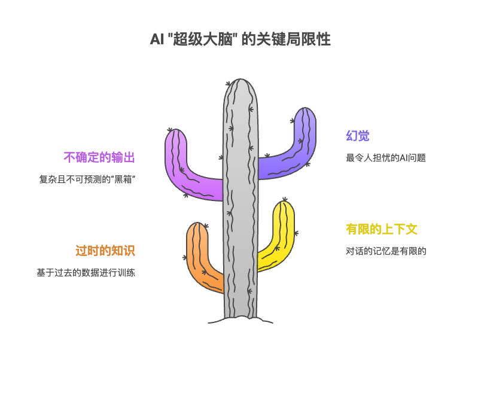
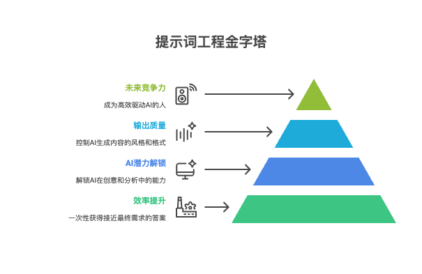
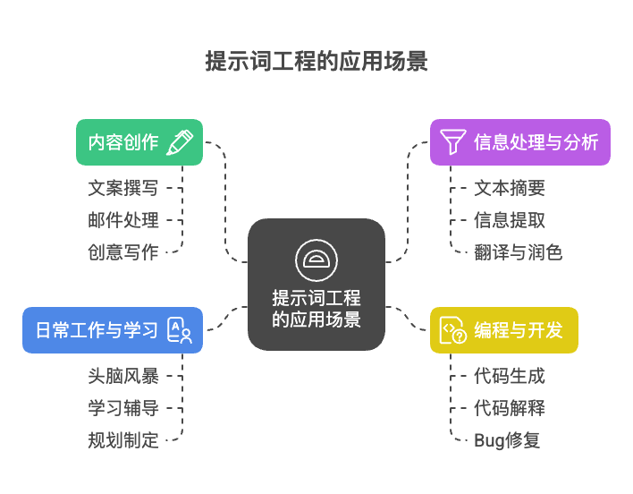
第二章：常用指令——掌握最基础的提示词框架
欢迎来到第二章！在第一章中，我们了解了提示词工程的一些基本概念。现在，我们将从“随口一问”的闲聊模式，升级到能让 AI 精确、高效完成任务的“指令模式”。秘诀就在于结构化。一个结构良好的提示词，就像一张清晰的地图，能引导 AI 顺利到达你想要的目的地。本章将介绍设计提示词的几大基本原则，并为你提供一个万能、易上手的入门框架。
1. 设计 Prompt 的基本原则
在构建复杂的框架之前，我们需要先掌握几个无论何时何地都适用的基本原则。它们是写出优秀提示词的基石。
1.1 明确性 (Clarity)
用词要清晰、具体，避免模棱两可。AI 没有人类的“常识”和“默契”，你说的越模糊，它猜的成分就越多，结果就越不可控。
优化前：“给我讲讲特斯拉。” 问题：这个请求太宽泛了。是讲公司历史？创始人？股价？还是某款车型？
优化后：“用一个段落向一位对电动汽车不了解的潜在买家，介绍特斯拉 Model Y 的主要卖点，包括续航、空间和核心科技。”
1.2 分步指令 (Step-by-step Instructions)
当任务比较复杂时，将其拆解成一步步的指令。这能显著提高输出结果的准确性和完整性，避免 AI 遗漏关键环节。
优化前：“写一篇关于在家做咖啡的博客文章。”
优化后： “请按照以下步骤，写一篇关于在家做手冲咖啡的博客文章： 第一步：构思 5 个吸引人的标题。 第二步：为选定的最佳标题写一个简单的文章大纲。 第三步：根据大纲，撰写文章的引言部分，大约 150 字。”
1.3 提供上下文 (Provide Context)
告诉 AI 当前的背景情况、你的身份或者最终输出结果的用途。上下文能帮助 AI 更好地理解你的意图，产出更贴合需求的内容。
优化前：“总结一下这段文字。”
优化后：“我是一名市场部经理，正在准备给团队的周会 PPT。请帮我总结下面这份市场调研报告，重点提炼出关于 00 后消费趋势和我们主要竞争对手动态的部分。”
1.4 使用示例 (Use Examples)
如果你对输出的风格或格式有特定要求，最好的方法就是给 AI 一个“样板”。这比用语言描述要直接得多。
优化前：“帮我写一个产品描述。”
优化后：“请为我新推出的‘星尘’降噪耳机写一段产品描述。我希望它风格类似于苹果官网的文案，简洁、有力、充满科技感。例如：‘静谧，从未如此悦耳。’ 请模仿这种风格。”
1.5 控制输出格式 (Control Output Format)
明确告诉 AI 你希望它以什么形式给你答案，例如列表、表格、JSON 代码、Markdown 等。
优化前：“远程工作的优缺点是什么？”
优化后：“请用一个两列的 Markdown 表格来呈现远程工作的优缺点。左边一列是‘优点’，右边一列是‘缺点’。”
1.6 迭代优化 (Iterate and Refine)
很少有人能一次就写出完美的提示词。把与 AI 的交互看作是一场对话。从一个简单的提示词开始，观察它的输出，然后根据结果不断地增加细节、调整要求，逐步优化，直到获得满意的结果。这是最重要的一个习惯。
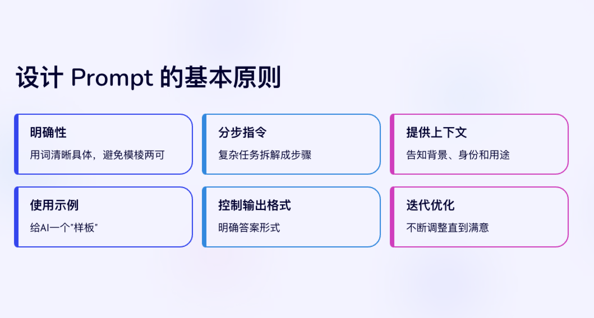
2. 常用框架介绍：四要素（RBTC）框架
掌握了基本原则，我们现在可以学习一个简单而强大的框架，我称之为 “四要素（RBTC）框架”。这个框架能帮助你系统地构建提示词，确保信息的完整性。
它由四个核心部分组成：
| 要素 | 英文 | 含义 | 作用 |
|---|---|---|---|
| 角色 | Role & Skill | 你希望 AI 扮演谁？ | 设定 AI 的知识领域、说话风格和思考模式。 |
| 背景 | Background | 当前的情境是什么？ | 为任务提供必要的上下文，让 AI 理解“为什么”要这么做。 |
| 任务 | Task | 需要 AI 做什么？ | 给出明确、具体的指令，这是提示词的核心。 |
| 要求 | Constraints | 有哪些规则或限制？ | 控制输出的格式、长度、风格等，确保结果符合规范。 |
一个完整的提示词不一定每次都包含所有四个要素，但当你感觉 AI 的回答不够理想时，可以尝试从这四个方面检查和补充信息。
一个完整的例子：
[角色] 你是一位资深的营养师，擅长为忙碌的上班族设计简单、健康的饮食计划。
[背景] 我是一名 30 岁的软件工程师，工作日午餐经常吃外卖，感觉很不健康。我希望从下周开始自己准备午餐便当，但每天早晨准备时间不超过 15 分钟。
[任务] 请为我设计一份为期 5 天（周一到周五）的午餐便当食谱。
[要求] 每个食谱需要列出主要食材、简单的制作步骤。请确保所有食谱都营养均衡，并且符合准备时间不超过 15 分钟的要求。请用 Markdown 列表格式输出。
通过这个框架，AI 得到的不再是一个模糊的问题，而是一个清晰的项目委托。
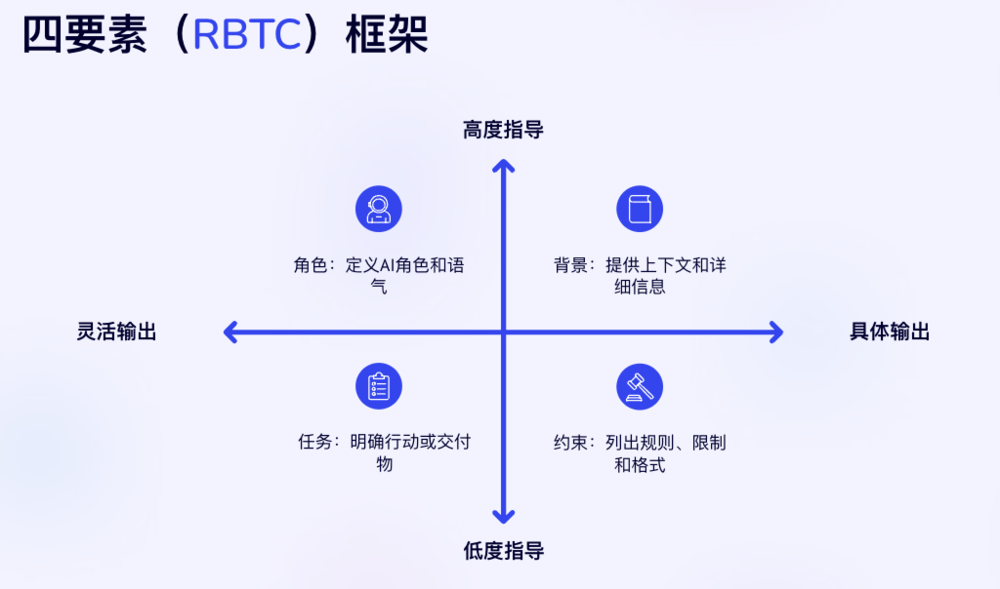
3. 角色与技能设计
为什么需要设定角色？ 因为设定角色能极大地“校准”AI 的输出。让它扮演一个“旅游博主”和扮演一个“历史学家”去介绍罗马，会得到截然不同的内容。
如何设计？
- 明确身份：使用“扮演……”、“作为一名……”、“你是……”等句式。
- 赋予技能：角色可以附加技能，让其能力更聚焦。例如，“你是一位熟悉中国唐诗的语言学家”比“你是一位语言学家”要更精确。
示例：
- 基础角色：“扮演一名专业的英文翻译。”
- 带有技能的角色：“你是一位经验丰富的营销文案专家，尤其擅长为科技产品撰写具有煽动性和吸引力的广告语。”
4. 背景设计
为什么需要设计背景？ 背景信息为 AI 的“创作”提供了舞台和情境，能有效避免产出“正确的废话”。
如何设计？
- 描述当前状况：“我们公司即将推出一款面向大学生的社交 App。”
- 说明目标受众：“我的演讲听众是一群对人工智能完全不了解的退休人员。”
- 提供关键信息：“下文是我和客户的聊天记录，他看起来很不满意。”
示例：
[背景] 我们是一家小型咖啡馆，最近发现年轻顾客比例下降。我们计划在社交媒体上发起一次活动来吸引他们。
[任务] 帮我们构思 3 个适合在抖音和小红书上推广的线上活动创意。
5. Prompt 的任务设计
为什么任务设计如此重要？ 这是整个提示词的“发动机”，是你最核心的诉求。任务的清晰度直接决定了产出的可用性。
如何设计？
- 使用强动词：用“分析”、“总结”、“对比”、“创建”、“翻译”、“分类”等明确的动词开头。
- 任务拆分：对于复杂的请求，参考 1.2 中的“分步指令”原则。
示例：
- 模糊任务：“处理一下这些数据。”
- 清晰任务：*“分析以下销售数据，找出 2024 年第四季度销量最高和最低的产品类别，并计算它们的同比增长率。”*
6. Prompt 的要求设计
为什么需要设计要求？ 要求是提示词的“护栏”，它规范了输出的最终形态，让结果更符合你的预期，减少你的后期修改工作。
如何设计？
- 格式要求：明确指出用 Markdown、JSON、表格、要点列表等。
- 风格要求：“请用风趣幽默的语气”、“保持专业、客观的风格”。
- 长度要求： “总结在 200 字以内”、“写一篇 1000 字左右的文章”。
- 其他限制：“不要使用专业术语”、“引用数据时请注明来源”。
示例：
[任务] 帮我写一封邮件，邀请客户参加我们的产品发布会。
[要求] 语气要正式但热情。邮件正文不要超过 300 字。在邮件末尾，用一个要点列表清晰地列出活动时间、地点和线上参与链接。
本章小结
恭喜你！你已经学完了提示词最核心的构建模块。请记住：
- 六大基本原则是你的内功心法，时刻牢记。
- RBTC 四要素框架是你行走江湖的兵器谱，遇到问题时，拿出来比对一下，看看还缺哪个环节。
从现在开始，尝试告别“一句话”式的提问，有意识地运用这些原则和框架来构造你的提示词。在下一章，我们将探讨更高级的提示词技巧，让你和 AI 的协作再上一个台阶。
本章练习
尝试用本章学到的 RBTC 框架，优化下面这个“小白”提示词：
- 原始提示词：“帮我写个减肥计划。”
思考一下，你会如何为它添加角色、背景、任务（细化）和要求呢？
第三章：化身万千——角色设定的高级艺术
在上一章，我们学习了 RBTC 框架，并了解了为 AI 分配一个“角色”是提升输出质量的第一步。这就像是给一位新员工分配了一个职位，例如“文案”或“分析师”。
然而，仅仅分配一个职位，与详细描述这个职位的职责、性格、技能和思考方式，最终得到的结果是截然不同的。本章，我们将进行一次“角色”的深度探索。我们将学习如何从简单地分配一个“职位”，升级为精准地为 AI 塑造一个“灵魂”，让它戴上你所期望的任何一副“专家面具”，以惊人的匹配度完成复杂任务。
本章将带你深入理解：
- 角色设定对输出结果的决定性影响。
- 如何拿捏角色描述的“精细度”。
- 如何驾驭和优化能力多元的“复合型角色”。
1. 角色设定究竟有多大影响？
一个经过精心设计的角色，至少会在三个关键层面重塑 AI 的输出：
1.1 影响语言风格与语气
不同的角色拥有截然不同的“人设”和沟通习惯。
- 无角色：“光合作用是植物利用光能将二氧化碳和水转化为有机物并释放氧气的过程。”
- 扮演“幼儿园老师”：“小朋友们好呀！光合作用就像是植物的魔法厨房，它把阳光当做火，把空气和水当做食材，给自己做好吃的能量点心，还呼出了我们需要的氧气哦！”
- 扮演“植物学博士”：“光合作用（Photosynthesis）是光能生物利用其光合色素，将光能转化为化学能，并固定无机碳（通常是二氧化碳）形成有机物的过程。其关键反应场所为叶绿体，涉及光反应和碳反应两大阶段……”
示例：https://chat.deepseek.com/a/chat/s/61788c2a-b83c-4f7d-8566-ead382b9b29b
1.2 影响回答的详略与口径
角色会影响 AI 表达时选取的口径、术语和详略程度。
- 金融爱好者：在分析公司财报时，可能会关注股价、市盈率等大众熟知的指标。
- 资深财务分析师（CFA）：则会深入分析现金流量表、资产负债率、杜邦分析等，并结合宏观经济形势和行业前景给出更具洞察力的判断。
2026 修订·一个重要的辩证提醒：2024 年以来的多项研究表明，人设提示对客观事实类任务的正确率并没有稳定增益——给模型加上“你是专家”并不会让它真的“变得更懂”。角色的真实价值在于控制风格、视角、立场与详略，而非提升知识上限。对准确性要求高的任务，靠的是清晰的任务描述、充足的背景和可核验的要求，而不是头衔。
1.3 影响分析问题的视角
同一个问题，不同角色会站在各自的立场上，给出视角完全不同的分析。
- 问题：公司是否应该全面推行远程办公？
- 视角1：人力资源总监：会从员工满意度、人才吸引与保留、企业文化凝聚力、绩效考核难度等角度分析。
- 视角2：首席财务官：会从节省办公室租金、水电成本、员工差旅补贴与潜在的生产力波动对财务报表的影响来考量。
- 视角3：首席技术官：会聚焦于网络安全风险、远程协作工具的效率与稳定性、IT支持的复杂度等技术层面。
2 “默认角色”的陷阱：为何要避免让AI“做自己”
如果不给 AI 设定角色，它会退回其“出厂设置”——一个知识渊博但毫无个性的通用问答模型。这个“默认角色”存在三大陷阱：
- 陷阱一：回答浅显。为了迎合最广泛的用户，答案往往点到为止，无法满足专业需求。
- 陷阱二：立场中立。像一本四平八稳的百科全书，缺乏鲜明的观点和态度，难以用于说服、营销等场景。
- 陷阱三：专业性不足。缺少特定领域的“行话”、思维框架和深度见解。
核心要点： 不设定角色，你得到的是一个“万事通”；设定了精准的角色，你得到的是一个可以信赖的“专家顾问”。主动为 AI 设定角色，是让它从被动回答转向主动创造的关键一步。
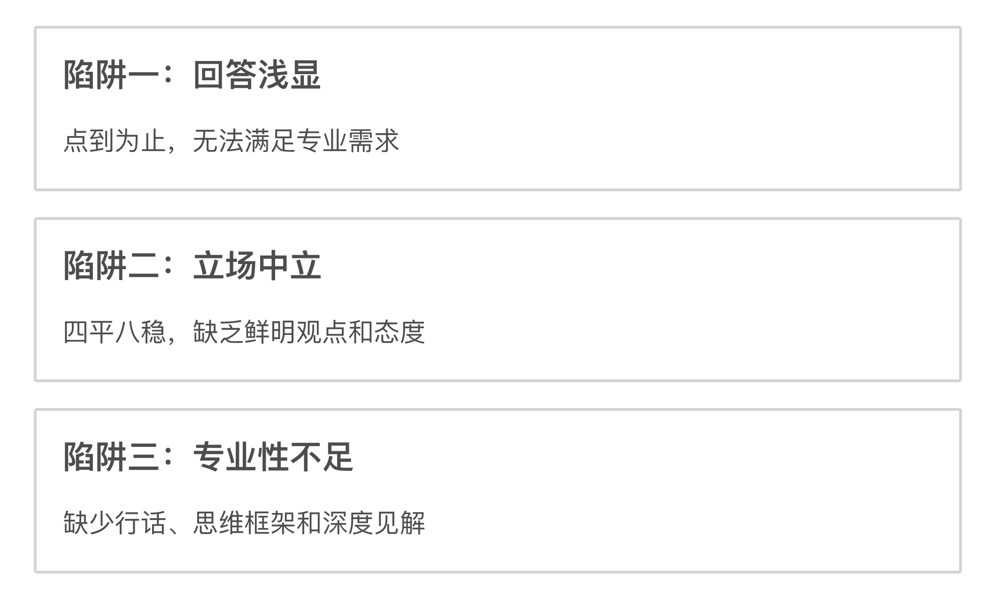
3 角色设定的“精细度”：恰到好处的艺术
角色的详细程度并非越复杂越好，而应与任务需求相匹配。请遵循**“按需分配，够用即可”**的原则。
- 简单任务，简略角色：翻译邮件、检查语法等，
“你是一名专业的英语翻译”就已足够。 - 复杂任务，具体角色：分析行业报告、制定营销策略等，角色需要更具体，如
“你是一位拥有15年快消品行业经验的营销战略家，尤其擅长社交媒体推广。” - 特殊要求，附加描述：需要特定风格时，务必加以描述，如
“你是一位风格犀利、用词幽默的电影评论家。”
注意： 警惕“角色堆砌”。千万不要在一个提示词里赋予角色过多的职能，例如：“你是一位精通编程的律师，同时也是一位善于沟通的心理学家”。这会让 AI 的认知产生混乱，导致输出结果逻辑不清、重点不明。
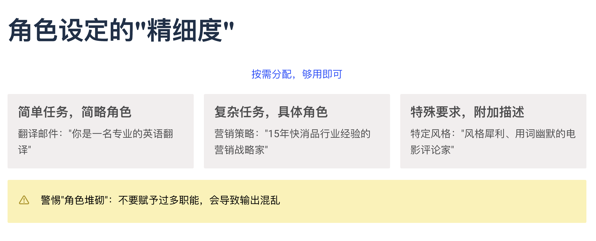
4 如何驾驭“复合型角色”？
有时候我们确实需要 AI 具备多种能力（例如，既懂技术又懂营销的产品经理）。当输出结果不理想时（如内容不聚焦、逻辑混乱），你可以通过以下步骤进行诊断和优化。
第一步：诊断角色能力是否“过载”
当输出不理想时，先检查角色设定：
- 能力间是否存在逻辑关联？ “懂法律”和“懂合同审查”是强关联，合理。“懂烹饪”和“懂量子物理”则关联很弱，除非任务极其特殊，否则大概率会出问题。
- 能否区分出主次能力？ 在当前任务中，哪项能力是核心，哪些是辅助？如果你的描述让主次能力显得模糊不清，AI 也会感到困惑。
第二步：优化复合型角色的方法
- 明确任务目标，弱化次要能力：在提示词中指明侧重点。“你是一位产品经理，请首先从营销的视角分析……同时简要评估技术实现的可行性。”
- 分解任务，逐步引导：将复杂任务拆解成多个提示词，让 AI 在每一步只扮演一个单一角色。“第一步：作为市场营销专家，请为这款新APP构思三个核心卖点。第二步：很好。现在，作为一名技术顾问，请分析实现这三个卖点的主要技术挑战是什么。”
- 设定角色优先级：直接告诉 AI 各项能力的权重。“你的核心身份是首席品牌官，请以此为出发点进行决策，你的技术背景仅作为辅助参考。”
- 通过背景和案例进行“情景教学”：在背景信息中提供一个案例，能帮助 AI 更好地理解在当前情境下，它应该如何运用它的复合能力。（注：第四章我们会讲述背景的重要性）
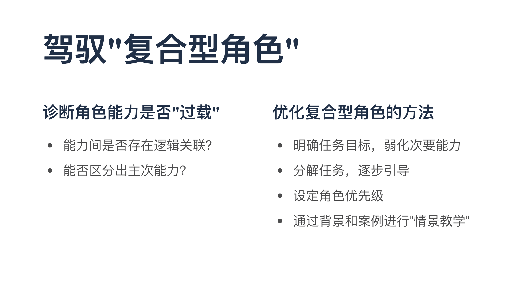
本章小结
在本章中，我们深入探索了角色设定的高级艺术。现在，我们应该深刻理解到：
- 角色是“滤镜”：它能改变 AI 输出的风格、详略和视角。
- 角色是“调音台”：它决定输出的口径、立场与表达方式；但它不是“引擎”——研究表明角色并不能真正提升模型在客观任务上的准确率（见 1.2 节修订提醒）。
- 角色设计是“平衡术”：我们需要在简略与详细之间找到最佳平衡点，并学会有策略地驾驭复杂的复合型角色。
熟练掌握角色设计，是你提示词能力进阶的基石。从现在开始，有意识地在你构建的每一个提示词中，都去精雕细琢它的“角色”吧。
做个小练习
场景：一家科技公司即将发布一款全新的智能咖啡机，名为“晨光（Morning Glow）”。这款咖啡机可以通过 App 精准控制水温、研磨粗细度，并能学习用户的口味偏好。
任务：请针对同一个任务——“为‘晨光’智能咖啡机撰写一段150字左右的产品介绍”，分别设计三个不同的提示词。
这三个提示词的唯一区别应该是你赋予 AI 的角色。请写出这三个提示词，并预测一下，仅改变角色，输出结果可能会有什么不同。
- 提示词 1 - 角色 A：
- 提示词 2 - 角色 B：
- 提示词 3 - 角色 C：
这个练习将帮助你直观地感受，仅仅是“角色”这一个变量，就能对最终结果产生多么巨大的影响。
第四章：搭建舞台——背景设定的高级艺术
在上一章，我们学会了如何为 AI 精心塑造一个“角色”，赋予了它独特的身份和灵魂。然而，一个再优秀的演员（角色），如果被置于一个漆黑、空无一物的舞台上，也难以施展才华。
这个“舞台”，就是我们提示词中的“背景（Background）”。
背景设计，恰如其名，是为我们设定的“角色”搭建一个清晰、生动的场景。它向 AI 提供了完成任务所必需的情境、目标和约束。正如你所感受到的，背景设计是一门微妙的艺术：信息太少，AI 如同在黑暗中摸索，难以理解我们的真实意图；信息太多、太杂，又可能淹没重点，甚至误导 AI，造成“南辕北辙”的尴尬。
本章，我们将聚焦于如何攻克这一难点，学习如何搭建一个“不多不少、恰到好处”的完美舞台，让你的 AI 角色能在最准确的场景中，上演最精彩的“对手戏”。
1. 情境为王：为什么说背景是“隐形的指挥家”？
一个高质量的背景，就像是藏在幕后的总指挥，它虽不直接执行任务，却决定了整个任务执行的方向和质量。它的力量在“收束可能性”和“锚定方向”。
让我们来看一个直观的对比：
没有背景的提示词：
写一个营销口号。
此时 AI 可能会这样想： “为谁写？什么产品？目标客户是谁？风格要怎样？这范围也太广了，我只能随便给一个万金油式的口号了。”
有背景的提示词：
[背景] 我们是一家初创公司，即将推出一款名为“清源”的家用滤水壶。我们的目标客户是注重健康和生活品质的年轻家庭。我们希望强调产品的超强过滤能力和现代简约的设计感。 [任务] 请为“清源”滤水壶创作 5 个营销口号。AI 的内心独白： “收到！目标是‘清源’滤水壶，受众是年轻家庭，关键词是‘健康’、‘过滤能力’和‘简约设计’。方向非常明确，我可以开始了。”
核心要点： 背景的作用，就是将一个开放式的问答题，变成一个有明确已知条件和求解目标的“应用题”。提供的“已知条件”越清晰，解题过程就越顺利，答案就越精准。
2. 背景的边界： “刚刚好”的艺术
如何把握背景信息的范围？关键在于理解任务本身的需求。请遵循“任务导向，按需提供”的核心原则。一个有效的背景，通常包含以下三个核心要素：
场景 (Scene): 发生了什么？
对当前情况的简要描述，让 AI 了解故事的开端。
示例：
我们的 App 最近一次更新后，收到了大量用户关于耗电过快的投诉。目标 (Goal): 希望达成什么？
你希望通过 AI 的输出，实现一个什么样的最终目的。
示例：
我的目标是撰写一份安抚用户情绪、解释原因并预告修复时间的官方公告。受众 (Audience): 这是写给谁看的？
输出内容的接收者是谁？他们的身份、情绪和认知水平是怎样的？
示例：
*这份公告的受众是所有普通用户，他们不懂技术，但非常关心自己的手机电量。*
当你不知道该提供哪些背景时，不妨先从这三个问题入手：“发生了什么？”、“我的目标是什么？”、“这是给谁看的？”
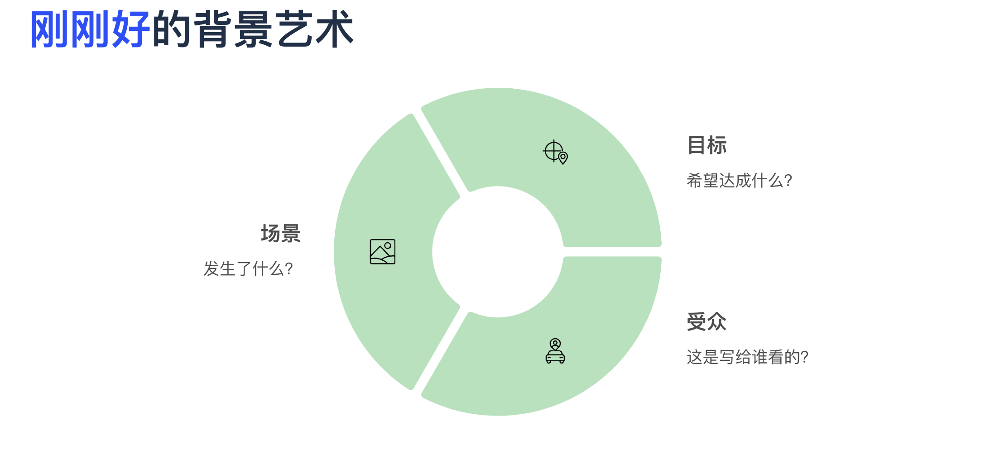
3. 少即是多：如何避免“背景噪音”干扰 AI？
初学者往往认为背景信息越全越好，但这可能导致 AI “抓不住重点”。过多的背景信息会带来两个主要问题：
- 焦点模糊 (Loss of Focus): 无关信息会形成“噪音”，干扰 AI 对核心任务的理解，甚至可能让它在次要细节上“过度发挥”。
- 上下文浪费 (Context Waste): 大多数 AI 模型处理的上下文长度是有限的（即“上下文窗口”）。用大量无关信息填满这个窗口，可能会挤占掉更重要的任务指令或格式要求，导致信息被截断。
要做到“少即是多”，我们需要学会过滤信息，只保留那些真正有价值的部分。
4. “三层信息筛选法”：做到全面又简洁的终极指南
这是背景设计的核心技巧。当你头脑中有很多想告诉 AI 的信息时，可以尝试用这个方法来梳理和提纯。
第一步：罗列 ——倾倒你的所有想法
不加评判地，将所有你认为可能与任务相关的背景信息，像写清单一样全部罗列出来。
第二步：筛选 ——将信息归入三个层次
审视你清单上的每一条信息，将其划分到以下三类中：
- 核心信息 :
- 定义： 没有这些信息，AI 就无法准确理解或完成任务。它们是任务的基石。
- 判断标准： 这条信息是否直接回答了“场景、目标、受众”这三个问题？是否包含任务的硬性约束？
- 处理方式： 必须保留。
- 次要信息 ：
- 定义： 这些信息能为任务增添色彩和细节，让输出更人性化或更具体，但并非不可或缺。
- 判断标准： 这条信息能让结果“更好”，但去掉它，任务本身依然可以被理解和完成。
- 处理方式： 酌情选用。 当你需要更高质量的输出时可以加入，但要注意篇幅。
- 无关信息 :
- 定义： 这些信息与当前任务目标没有直接联系，甚至可能引起歧义。
- 判断标准： 这条信息是否只是你个人的内心活动？是否是另一个不相关任务的细节？
- 处理方式： 坚决删除。
第三步：构建——组合你的最终背景
使用所有“核心信息”和部分精选的“次要信息”，重新组合成一段简洁、清晰、重点突出的背景描述。
让我们来看一个实际案例：
- 任务： 让 AI 帮忙写一封邮件，回复一位因产品延迟发货而愤怒的客户。
- 第一步：罗列 (原始想法)
- 客户叫李明，他很生气。
- 他订的型号是
XM-2025。 - 订单号是
SN12345。 - 他昨天在社交媒体上骂了我们公司。
- 延迟是因为我们的供应商物料短缺。
- 这是我们公司第一次出现这种大规模延迟。
- 我希望他能冷静下来，不要取消订单。
- 我们准备给他一张 50 元的优惠券作为补偿。
- 我的老板张总也很关注这件事。
- 预计下周一可以发货。
- 第二步：筛选
- 核心信息： 1, 2, 5, 7, 8, 10
- 次要信息： 3, 6
- 无关信息： 4, 9
- 第三步：构建 (最终背景)
[背景]
场景: 一位名叫李明的客户因其订购的 XM-2025 型号产品延迟发货而非常愤怒。延迟的根本原因是上游供应商物料短缺，但我们预计下周一可以恢复发货。
目标: 我的核心目标是安抚他的情绪，让他愿意等待而不是取消订单。
补偿方案: 我们决定为他提供一张 50 元的优惠券作为补偿。
受众: 李明是一位对我们品牌抱有高期望，但现在极度不满的客户。
经过筛选和重构，背景信息变得极度清晰、有力，没有任何废话。AI 可以基于这段精准的背景，轻松地完成任务。
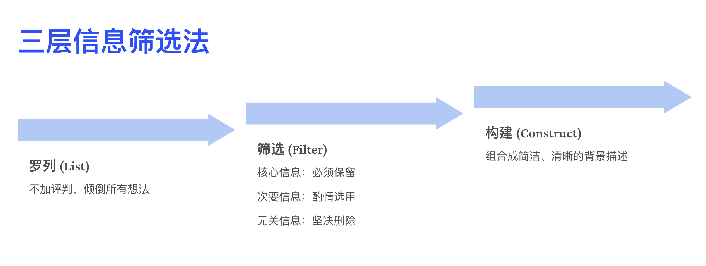
本章小结
在本章，我们学会了如何为 AI 搭建一个清晰、高效的“舞台”。请记住：
- 背景是“指挥家”：它为 AI 的“表演”设定了基调和方向。
- 边界在于“恰好”：围绕“场景、目标、受众”来思考，提供必要且充分的信息。
- 核心技巧是“筛选”：运用“三层信息筛选法”，将庞杂的想法提炼成简洁有力的核心背景。
当“角色”的灵魂与“背景”的舞台完美结合，你的提示词就已经具备了产生卓越输出的强大潜力。
本章实践
场景： 你是一家名为“云端办公”的软件公司的产品经理。公司最近决定，将在下个版本中移除一个使用率较低、但有一小群忠实用户非常喜爱的“旧版文件同步”功能。
任务： 请运用本章学习的“三层信息筛选法”，为“撰写一封面向这部分用户的官方通知邮件”这个任务，设计一段精准的背景描述。
请按以下步骤完成：
- 罗列信息： 尽可能多地写出你认为相关的背景信息点（至少写 8-10 条）。
- 筛选信息： 将你罗列的信息点明确划分为“核心”、“次要”、“无关”三类。
- 构建背景： 基于你的筛选结果，撰写最终用于提示词的、结构化的背景描述。
第五章：精准打击——任务指令的设计与拆解
在前面的章节里，我们已经学会了如何为 AI 精心塑造一个“角色”，并为它搭建了生动的“背景”舞台。我们的“演员”已经就位，场景也已布置完毕。现在，是时候让他行动起来了！这一声“Action!”，就是我们提示词中的“任务（Task）”。
“任务”是整个提示词最核心的指令部分。它直接告诉 AI “做什么”。一个模糊的任务指令，就像对员工说“你看着办”，结果往往差强人意；而一个清晰的任务指令，则像是下达给特种兵的作战命令，目标明确，行动高效。
本章，我们将学习如何设计出“精准打击”式的任务指令，告别模糊不清的愿望，掌握下达清晰、可执行命令的艺术，哪怕是面对再复杂的“任务巨兽”，也能将其轻松拆解并驯服。
1. 动词的力量：从模糊愿望到清晰指令
任务指令设计的第一个秘诀，在于使用强劲、明确的行动动词。不同的动词会激活 AI 不同的“思维模块”，直接决定了它将如何处理你提供的信息。
请看下面“弱动词”与“强动词”的对比：
| 弱动词 (应避免) | 强动词 (推荐使用) | 效果说明 |
|---|---|---|
| 弄一下、处理一下 | 分析 (Analyze) | 指示 AI 深入研究信息内部的结构和关系。 |
| 写一下关于…… | 撰写 (Write/Compose) | 指示 AI 进行正式的、结构化的内容创作。 |
| 给我一些…… | 生成 (Generate/Create) | 指示 AI 从无到有地创造出新的内容，如创意、列表、代码。 |
| 看看这个 | 总结 (Summarize) | 指示 AI 提炼长文本的核心要点。 |
| 这俩有啥不一样 | 对比 (Compare/Contrast) | 指示 AI 找出两个或多个项目之间的异同。 |
| 把它变成…… | 翻译 (Translate) / 续写 (Continue) / 润色 (Polish) | 指示 AI 对现有文本进行特定形式的转换或加工。 |
核心要点： 任务指令的起点，就是选择一个最能准确表达你意图的“强动词”。这能最大程度地减少 AI 的猜测空间，让它立刻明白自己的核心使命。
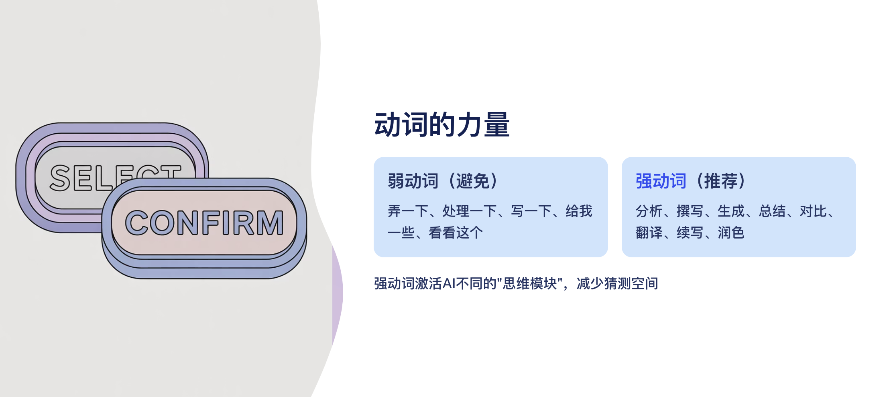
2. 单一职责原则：一次只说一件事
初学者最常犯的错误之一，就是试图在一个提示词里塞进太多的任务，我们称之为**“任务堆砌”**。
- 错误示范 (任务堆砌):
*请总结一下这篇关于人工智能的文章，分析一下作者的主要论点和潜在偏见，然后为我写一篇反驳它的评论，并为这篇评论想 5 个吸引人的标题。*
这样的指令会让 AI 不知所措。它可能只完成其中一部分，或者每一部分都完成得很肤浅。优秀的任务指令，应当像优秀的程序代码一样，遵循“单一职责原则”。
核心要点： 在一个提示词中，尽量只包含一个核心任务。如果目标确实复杂，不要试图“一口吃成个胖子”，而应该使用下一节介绍的“任务拆解法”。
3. “任务拆解法”：驯服复杂的“任务巨兽”
当你面对一个庞大而复杂的终极目标时（例如“为我的新公司制定一份商业计划书”），直接把这个目标扔给 AI，无异于让它去对抗一头“任务巨兽”。结果通常是它被巨兽吞噬，吐给你的则是一堆无用的信息。
正确的做法，是像一位经验丰富的猎人一样，将这头巨兽拆解成一个个可以轻松处理的小块。这就是“任务拆解法”。
它可以通过多次对话完成，也可以在一个提示词内分步指令。
案例： 驯服“撰写市场分析报告”这头巨兽。
错误的、一口吞的指令：
帮我写一份关于中国电动汽车市场的分析报告。正确的、分步拆解的指令：
第一步：定义市场格局
[任务1] 首先，请列出当前中国电动汽车市场份额排名前 5 的品牌，并提供它们去年的大致销量数据。第二步：分析竞争对手
*[任务2] 很好。接下来，请针对这 5 个品牌，用表格形式分别总结它们各自的核心产品、主要优势和明显劣势。*第三步：洞察消费者
*[任务3] 基于以上信息，请分析当前中国电动汽车消费者的主要购买动机有哪些？他们最看重哪些因素？*第四步：总结与预测
[任务4] 非常棒。最后，请综合以上所有信息，撰写一段约 300 字的总结，描述当前市场的整体态势，并对未来一年的发展趋势做出简要预测。
通过这种方式，你将一个模糊的“大请求”，变成了一系列清晰、可控、高质量的“小指令”。你完全掌控了整个流程，并且每一步的产出都精准、可用。
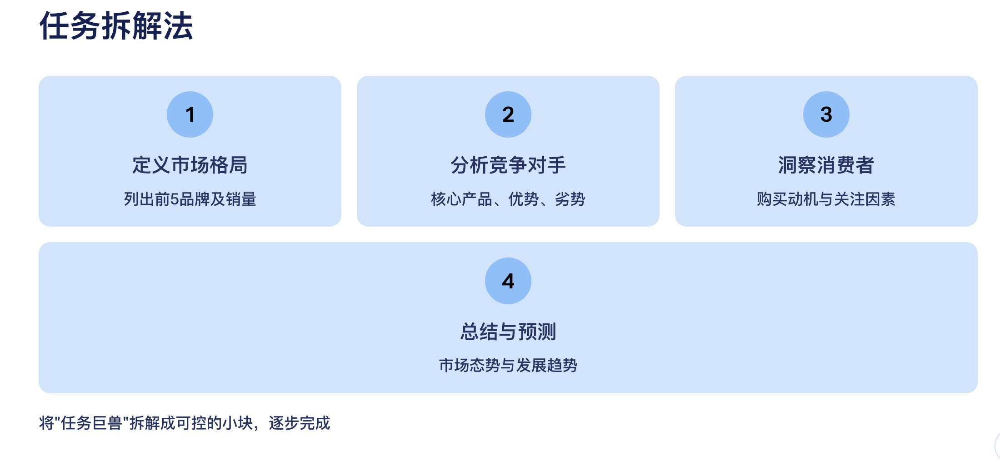
4. 明确优于隐含：别让 AI “猜”你的心思
有时候，我们提供了充足的背景信息，却忘记了给出一个明确的“任务指令”，这是一种“隐含任务”。
隐含任务的错误示范：
[背景] 这是我上周写的项目周报草稿：[粘贴周报内容] [提问] 你觉得怎么样？
AI 看到这个提问会很困惑。“怎么样”可以指语法、格式、内容、语气……它只能去猜你的心思。
明确任务的正确示范：
[背景] 这是我上周写的项目周报草稿：[粘贴周报内容] [任务] 请你扮演一位挑剔的上司，检查这份周报，并从“数据是否充分”和“结论是否清晰”这两个角度，提出具体的修改建议。
核心要点： 永远不要假设 AI 知道你想让它做什么。在提供完所有信息后，务必用一个清晰的、以强动词开头的指令来收尾，告诉它“现在，请你做这件事”。
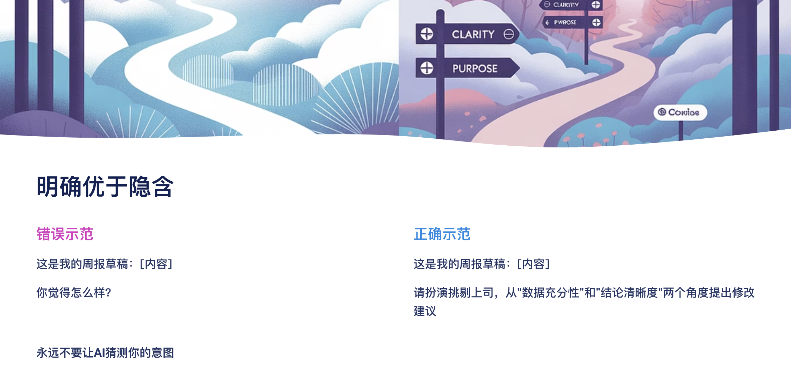
本章小结
在本章，我们学会了如何设计和下达精准的任务指令，这是驱动 AI 产生价值的核心步骤。请记住：
- 选择强动词： 任务指令的灵魂在于一个精准的动词。
- 保持单一职责： 一次只让 AI 专注做一件事，以保证质量。
- 学会任务拆解： 将任何复杂的“任务巨兽”拆解成一系列简单的“小任务”，逐个击破。
- 坚持明确指令： 永远清晰地告诉 AI 你要它“做什么”，而不是让它去“猜”。
当一个优秀的“角色”，站在一个清晰的“背景”舞台上，收到了一个精准的“任务”指令，一场精彩的演出就已经成功了 90%。
本章实践
场景： 你是一位内容创作者，希望围绕“间歇性断食”这个健康主题，为你的社交媒体账号制作一系列内容。
终极目标： 制定一个为期一周的、关于“间歇性断食”的内容发布计划。
任务：
- 请首先指出，为什么“请为我制定一个关于间歇性断食的一周内容计划”这个指令，属于一个难以被高质量完成的“任务巨兽”？
- 请运用本章学习的“任务拆解法”**，**将这个庞大的目标，分解成至少 4 个循序渐进、清晰可执行的子任务提示词。请把这 4 个提示词具体地写出来。
第六章：最后的“护栏”——输出要求的精准设定
恭喜你走到了这里！通过前面的学习，我们已经能够指挥 AI 去执行一项具体的任务了。我们定义了“谁去做（角色）”，设定了“在什么情境下做（背景）”，并下达了“做什么（任务）”的核心指令。
然而，你可能已经发现，AI 完成任务后的产出，有时像是一块未经打磨的“毛坯”——内容也许对了，但格式混乱、语气不对、长短不一。从“基本完成”到“完美交付”，这“最后一公里”的秘诀，就在于我们 RBTC 框架的最后一个字母 C——要求（Constraints）。
“要求”，就是我们为 AI 的输出设定的“护栏”和“质检标准”。它确保了 AI 的产出不仅内容正确，其形式、风格、乃至每一个细节都能精准地满足我们的规范。本章，我们将学习如何设定这些精准的“要求”，让你彻底告别繁琐的二次修改，真正实现“一次生成，即刻使用”。
1. 为何需要“要求”：从“毛坯”到“成品”的最后一公里
如果没有明确的“要求”，AI 倾向于以它最习惯的、大段的、非结构化的文本形式来回答。这往往意味着大量的人工后期处理工作。
没有“要求”的提示词：
请对比一下 A 公司和 B 公司的最新款手机的优缺点。可能的输出： 一大段杂乱无章的文字，将优点和缺点混在一起描述，阅读和使用都非常不便。
有明确“要求”的提示词：
请对比一下 A 公司和 B 公司的最新款手机的优缺点。 [要求] 格式： 请使用一个四列的 Markdown 表格来呈现。列标题： 分别是“品牌”、“优点”、“缺点”和“关键参数”。内容： 语言要客观中立，避免使用煽动性词语。可能的输出： 一个结构清晰、一目了然的表格，可以直接复制用于报告或演示。
核心要点： “要求”是连接 AI 输出和我们最终使用场景之间的桥梁。它将 AI 的“原始算力”转化为我们需要的“即用型成果”，能极大地提升我们的工作效率。
2. “要求”的四大支柱
“要求”的设定并非天马行空，我们可以从以下四个关键的“支柱”入手，系统性地构建我们的输出“护栏”。
2.1 格式 (Format) - 为输出穿上“合身的衣服”
这是最常用也最直观的要求，它规定了输出内容应该以什么样的结构呈现。
- 常用格式要求：
- 列表： “请用无序列表（bullet points）的形式列出……”
- 表格： “请用 Markdown 表格的形式呈现……”
- 特定结构： “请按照‘问题-答案’的格式……”、“请以一封正式邮件的格式撰写……”
- 代码格式： “请输出为一段 JSON 代码，其中必须包含
name和price两个键。”
2.2 风格 (Style) - 赋予输出“独特的灵魂”
风格决定了输出内容的语气、个性和情感色彩。设定风格时，描述越具体越好。
- 常用风格要求：
- 正式/非正式： “请使用正式、专业的书面语。”、“请用轻松、口语化的语气。”
- 情感色彩： “语气要风趣幽默。”、“风格要充满激情和煽动性。”、“请用富有同理心、温暖的语气来写。”
- 角色化风格： “像一位资深记者一样，用客观、中立的笔触来报道。”、“模仿海明威的写作风格，使用简洁、有力的短句。”
2.3 长度 (Length) - 给输出一个“合适的尺寸”
对长度的精确控制，可以避免言不及义或冗长累赘。
- 常用长度要求：
- 字数限制： “请将总结控制在 200 字以内。”
- 段落/条目数： “请写一篇由三个段落组成的文章。”、“请给出 5 个核心要点。”
- 范围限制： “全文长度大约在 800-1000 字。”
2.4 限制 (Constraints) - 划定“不可逾越的红线”
限制，尤其是“负向要求”（Negative Prompts），是高阶技巧。它明确告诉 AI 不应该做什么，能有效避免不想要的结果。
常用限制要求：
- 内容排除： “在你的回答中，请不要提及任何关于价格的信息。”、“请避免使用任何复杂的行业术语。”
- 信息来源： “你的回答必须完全基于我上面提供的背景材料，不要引入任何外部知识。”
- 行为禁止： “不要在结尾说‘希望我的回答对你有帮助’之类的话。”
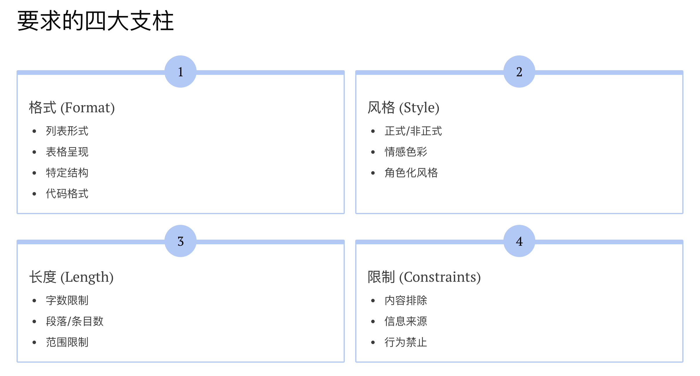
3. 终极技巧：用“样例”来定义一切
有时候，用语言描述“要求”很复杂，而最高效的方式是“Show, don't tell.”（展示，而非说教）。直接给 AI 一个你期望的输出样例，它会比任何描述都更快地领会你的意图。这一点我们在后面章节还会详细描述案例的重要性。
没有样例的指令：
任务： 为我的三款咖啡产品（拿铁、摩卡、美式）分别想一句广告语，广告语要简短，后面要跟一句话的解释。提供样例的指令：
任务： 为我的三款咖啡产品（拿铁、摩卡、美式）分别想一句广告语。请严格遵循下面的格式和风格： [产品名]：[广告语] （一句话解释）：[对广告语的简短阐述] 例如： 卡布奇诺：温柔的泡沫之吻。 （一句话解释）：强调其奶泡丰富、口感柔和的特点。
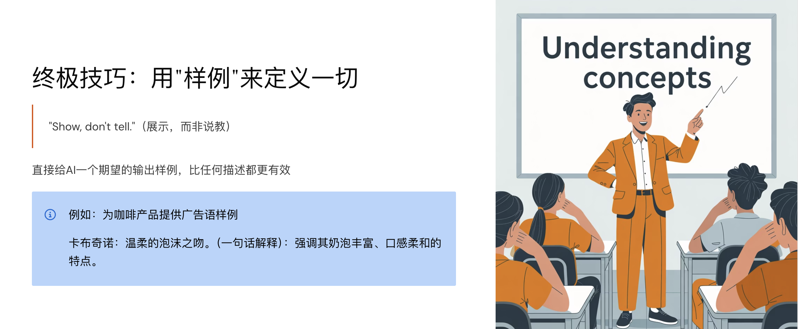
4. 综合示例：组装一条完美的提示词
现在，让我们将全部所学融会贯通，构建一条包含所有 RBTC 要素的、堪称完美的提示词。
场景： 一家名为“星尘科技”的公司，其王牌产品“星尘AI助手”近期因服务器升级，导致部分用户在前天晚上经历了约1小时的服务中断。你需要以“客户成功经理”的身份，给所有受影响的用户写一封安抚和补偿邮件。
一条完整的提示词：
[角色]
你是“星尘科技”公司的一位资深客户成功经理，名叫“苏珊”。你专业、有同理心，并且善于用真诚、清晰的语言与客户沟通。
[背景]
我们公司的核心产品“星尘AI助手”在前天晚上（周二晚8点到9点）因服务器核心升级，意外造成了约1小时的服务中断。虽然问题已迅速解决，但对部分付费用户的体验造成了不良影响。我们的目标是安抚用户，真诚道歉，并提供补偿以挽回用户的信任。
[任务]
请撰写一封发送给所有受影响用户的电子邮件。
[要求]
1. 格式： 遵循标准的商业邮件格式，包含清晰的标题、称呼、正文和落款。
2. 风格： 语气必须诚恳、透明、负责任，同时也要体现出专业性和对用户的关怀。不要使用任何推卸责任或模棱两可的词语。
3. 长度： 邮件正文请控制在 300 字以内，确保用户能快速阅读。
4. 限制与内容：
- 邮件的开头必须直接、坦诚地说明事故和道歉。
- 必须在邮件中明确提出补偿方案：为所有受影响的付费用户账户自动延长 7 天的会员时长。
- 在结尾处，要再次感谢用户的理解与支持。
- 不要包含任何关于事故的技术细节。
本章小结
我们已经走完了 RBTC 框架的全部旅程。从**角色（Role）的设定，到背景（Background）的搭建，再到任务（Task）的下达和要求（Requirements）**的规范，你已经掌握了从“小白”成长为“提示词工程师”的核心心法。
R - B - T - C，这四个简单的字母，将是你未来与 AI 高效协作的最强武器。它能帮助你理清思路，构建结构化的指令，将你的意图精准地传达给 AI。
当然，理论学习只是第一步。真正的精通源于不断的实践、尝试和迭代。不要害怕失败，将每一次与 AI 的对话都看作是一次有趣的实验。去探索、去创造，去享受这个强大工具为你带来的效率革命和无限可能吧！
你的 AI 协作之旅，从现在，才真正开始。
本章实践
场景： 你是一位旅游博主，刚刚写下了一段关于你去泰国曼谷旅游的经历的草稿，内容很长，而且非常口语化，像流水账。
你的草稿：
哇塞，我上周去了曼谷，真的太好玩了！天气热得要命，我第一天就去大皇宫了，人山人海，金碧辉煌的，不过门票有点贵。然后我吃了好多好吃的，冬阴功汤、芒果糯米饭，街边随便一个摊子都好吃到爆！我还去做了个泰式按摩，感觉骨头都要散架了，但按完超舒服。哦对了，我还坐了那个很长的船，在湄南河上，风景不错。总之，泰国是个好地方，推荐大家去。
任务： 请设计一个完整的提示词，让 AI 将上面这段流水账草稿，改写成一篇结构清晰、吸引人的社交媒体帖子。
要求： 在你的提示词中，必须明确包含本章所学的“要求”的四大支柱（格式、风格、长度、限制）中，每一种至少一项具体要求。
第二阶段：小白进阶提示词
小白进阶，添加一点难度的提示词技巧
第七章：举一反三——少样本学习的魔法
欢迎来到提示词技巧的第二阶段！在第一阶段，我们系统学习了 RBTC 框架和格式化工具，掌握了如何向 AI 下达清晰的指令。这好比我们学会了用一本详尽的说明书，来指导一位机器人按部就班地工作。
但是，如果任务变得更复杂、更抽象，甚至带有一些主观色彩时，单纯的“说明书”可能就不够用了。例如，如何让 AI 模仿你独特的写作风格？如何让它从一段话中识别出你自定义的情感分类？
这时，我们就需要一种更高级的沟通方式，从单纯的“告知（Telling）”升级为更高效的“示范（Showing）”。本章，我们将学习一项强大的进阶魔法——少样本学习（Few-Shot Learning），让你学会如何通过“言传身教”，引导 AI 举一反三，完成那些仅靠指令难以企及的复杂任务。
1. 从“告知”到“示范”：什么是少样本学习？
在提示词工程中，少样本学习（Few-Shot Learning, FSL）的本质，就是不再仅仅用语言描述任务，而是给 AI 提供 1 到 5 个具体的“输入→输出”范例，让它在执行任务前，先通过“模仿”来快速学习任务的模式和标准。
让我们通过一个案例，直观感受“零样本（Zero-Shot）”和“少样本（Few-Shot）”的天壤之别。
任务： 从非结构化的文本中，提取出人物、公司和职位。
零样本提示词（仅“告知”）
<aside>任务： 从下面的文本中提取出人物、公司和职位。
文本： “在昨日的发布会上，宇宙探索公司的创始人马斯克宣布，莉娜·陈将担任火星探索项目的首席工程师。”
输出：
AI 可能会给出一个正确的答案，也可能格式五花八门，或者只提取出部分信息。结果不可控。
</aside>少样本提示词（“告知”+“示范”）
任务： 从文本中提取出人物、公司和职位，并严格按照 JSON 格式输出。下面是几个例子： --- ### 示例1 - 文本： “根据报道，李明已经正式加入未来智能，担任AI伦理研究员。”* - 输出：{ "person": "李明", "company": "未来智能", "title": "AI伦理研究员" } ### 示例2 - 文本： “在股东大会上，现任CEO王静确认，全球金融的下一任领导者将是张伟。” - 输出： { "person": "王静", "company": "全球金融", "title": "CEO" } { "person": "张伟", "company": "全球金融", "title": "下一任领导者" } --- 现在，请处理以下文本： “在昨日的发布会上，宇宙探索公司的创始人马斯克宣布，莉娜·陈将担任火星探索项目的首席工程师。”
AI 看到这些范例后，不仅能准确地提取信息，更会模仿你给出的 JSON 格式和处理方式，输出一个高度一致、可直接使用的结果。
2. 我们为何要“示范”？少样本学习的价值
提供范例看似增加了提示词的长度，但它解决了仅靠指令难以解决的三大核心问题：
- 消除任务的模糊性： 一个好的范例，胜过千言万语。它能同时定义任务的目标、格式、风格、和答案的详略程度，让 AI 对任务的理解不再有任何歧义。
- 提升输出的稳定性： 范例为 AI 的输出提供了一个清晰的“锚点”。AI 会尽力模仿你的范例，从而让每次的输出格式和结构都保持高度一致，便于进行自动化的后处理。
- 攻克抽象复杂的任务： 对于某些任务，其标准很难用语言精确描述，对于这些任务，提供范例是让 AI 快速“上道”的唯一捷径。例如：
- 特定情感分析： 分析客服对话中的“潜在流失风险”。
- 代码风格转换： 将一段 Python 代码从“面向过程”风格改为“面向对象”风格。
- 模仿特定文风： “模仿鲁迅的笔触，写一段对当下年轻人熬夜现象的评述。”
3. 示范的艺术：如何设计一个优秀的少样本提示词
设计范例是一门艺术，遵循以下原则，能让你的“示范”效果倍增：
原则一：结构高度一致
你提供的所有范例，从输入到输出的格式必须完全一致。使用相同的分隔符、标签和换行，这种“仪式感”能让 AI 更快地识别出模式。
原则二：质量远胜于数量
2-3 个清晰、准确、无歧义的“高质量”范例，远胜过 10 个随手写的“低质量”范例。错误的范例会误导 AI，让它“学坏”。通常，2-5 个范例是效果和成本的最佳平衡点。
原则三：覆盖不同情况
如果可能，让你的范例覆盖一些边界情况或不同的场景。这能提升 AI 的“泛化能力”，让它在面对新情况时表现得更出色。例如，在前面的信息提取案例中，我们特意提供了一个包含多个人物的范例。
原则四：测试示例顺序
少数情况下，AI 模型可能会对范例的顺序比较敏感（例如，更关注最后一个范例）。如果输出结果不稳定，可以尝试调整一下范例的排列顺序，看看是否有所改善。
4. 少样本学习的“天花板”与应对策略
少样本学习虽强，但并非万能。了解其局限性，可以帮助我们更合理地运用它。
挑战与风险
- “垃圾进，垃圾出”： 这是最大的风险。如果你的范例本身存在错误、偏见或不一致，AI 会毫不犹豫地学习并放大这些错误。
- 高昂的“Token 成本”： 范例会占用宝贵的上下文窗口（Token 预算）。在需要处理长文本或进行长对话时，过多的范例可能会导致重要信息被截断。
- 复杂的“推理天花板”： 对于需要多步复杂逻辑推理的任务（如高级数学证明、严谨的法律案例分析），仅仅提供几个最终答案的范例，可能不足以让 AI 学会中间的推理过程。
- 推理模型上的例外（2026 补注）： 对内置推理链的模型（OpenAI o 系列／GPT-5 思考模式、DeepSeek R1、Claude 扩展思考等），官方指南明确提示：少样本范例往往不增益、甚至会干扰其自身推理。在这类模型上，优先用清晰的零样本指令，只有当输出格式需要锚定时才提供范例。
应对与进阶策略
- 结合上下文提示： 将高质量的范例与我们在第四章学习的、清晰的“背景”描述相结合，能让 AI 更深刻地理解任务情境。
- 引入思维链（Chain-of-Thought）： 这是解决复杂推理问题的关键。我们不仅要给 AI 最终答案的范例，更要把解题的“思考过程”作为范例展示给它。这正是我们后面章节将要深入探讨的、更强大的技术！
本章小结
在本章，我们迈出了从“指令者”到“引导者”的关键一步。通过学习少样本（Few-Shot）的魔法，我们懂得了：
- 核心思想： “Show, don't just tell.”（示范，而非仅仅告知。）
- 核心价值： 消除模糊、提升稳定、攻克复杂。
- 核心艺术： 设计高质量、结构一致且覆盖多场景的范例。
少样本学习是提示词工程中一道重要的分水岭。掌握它，意味着你开始能真正地“训练”和“塑造”AI 在特定任务上的行为模式。
本章实践
场景： 你希望 AI 扮演一个“会议纪要整理助手”，它需要将一段杂乱的、口语化的会议录音文本，整理成一份结构化的会议纪D要。
任务：
- 请先尝试设计一个“零样本”提示词来完成这个任务。
- 然后，请设计一个“少样本”提示词。你需要自己创造 1-2 个“输入→输出”的范例来“教会”AI 你想要的会议纪要格式（例如，格式应包含“会议主题”、“与会人员”、“核心决议”、“待办事项”等关键部分）。
- 对比你写的两个提示词，并简要说明你认为“少样本”版本会带来哪些具体的优势。
第八章：零样本 vs. 少样本——我该何时选择“示范”？
在上一章，我们学习了强大的“少样本学习”魔法，通过“示范”来引导 AI 完成复杂的、带有主观标准的任务。这自然会引出一个关键问题：难道我们以后写的每一个提示词，都需要费心去构造范例吗？
答案是：当然不。
事实上，在本书的第一阶段（第2-6章），我们投入大量精力学习的 RBTC 框架和各种设计技巧，其本质都是在打磨同一门手艺——高质量的“零样本学习（Zero-Shot Learning, ZSL）”。
本章，我们将正式地为我们一直在使用的、最基础也最核心的方法“正名”，并深入探讨它的优势与“天花板”。最重要的是，我们将建立一个清晰的决策框架，帮助你清晰地判断：面对一个新任务，究竟应该坚持使用强大的“指令”，还是升级到更精准的“示范”？
1. 到底什么是零样本学习？
零样本学习（Zero-Shot Learning, ZSL），顾名思义，就是在不提供任何成功范例（zero-shot）的情况下，仅通过任务描述和指令，让 AI 直接完成任务。
没错，你之前写过的所有不包含输入/输出范例的提示词，无论简单还是复杂，都属于零样本学习的范畴。
而我们精心打磨的 RBTC 框架，正是“高阶零样本学习”的终极形态。
一个优秀的零样本提示词 ≈ 清晰的角色 (Role) + 充足的背景 (Background) + 精准的任务 (Task) + 明确的要求 (Requirements)
它依赖的是 AI 模型自身庞大的预训练知识库和强大的语言理解能力，去“领悟”你的指令并执行。
2. 指令的力量：零样本学习的优势与适用场景
在许多场景下，零样本学习不仅足够，甚至是最佳选择。它的核心优势在于：
极致的效率与灵活性
对于开放性、创造性或常识性的任务，ZSL 是最快的方法。你不需要花时间去构造范例，可以迅速地提出问题、获得启发。
- 适用场景： 创意构思（“帮我为一家咖啡店想5个名字”）、知识问答（“请解释什么是黑洞”）、内容初稿（“写一段关于环保的演讲稿”）。
节省宝贵的“Token 预算”
在 API 调用等场景中，Token 就是成本。ZSL 的提示词更短，消耗的 Token 更少，也为 AI 的回答留出了更充足的空间，尤其适合处理长文本。
充分利用 AI 的“知识底蕴”
ZSL 直接调用 AI 广博的知识库。当你需要跨领域的通用知识时，ZSL 能够给你带来意想不到的广度和深度。
3. 指令的“天花板”：零样本学习的局限性
尽管 ZSL 用途广泛，但当我们对任务的精准度和稳定性的要求越来越高时，它的“天花板”也就显现出来了：
面对“新规则”时的困惑
当你的任务包含一个 AI 从未见过的、高度定制化的格式、逻辑或分类标准时，仅靠描述很难让它完全理解。比如，要求 AI 按你公司内部独有的报告格式输出。
输出结果的“漂移”
由于没有范例作为“锚点”，同样一个 ZSL 提示词，每次运行的结果可能会有细微的、不可控的差异。这种“不稳定性”对于需要标准化输出的场景是致命的。
对指令措辞的“高度敏感”
在 ZSL 模式下，AI 的表现有时像个“敏感的孩子”。你稍微改变一下指令的措辞，输出结果可能就会有很大的变化，这给调试带来了挑战。
而以上这三点，恰恰是“少样本学习”最擅长解决的问题。
4. 决策框架：零样本还是少样本？
那么，面对一个新任务，我们该如何抉择？你可以遵循“默认零样本，按需升少样本”的原则，并用以下问题来辅助决策：
| 决策问题 | 如果答案是“是” | 如果答案是“否” |
|---|---|---|
| 1. 任务是否包含一个 AI 从未见过的、高度定制化的格式或逻辑？ | 倾向于 少样本 | 继续考虑下一个问题 |
| 2. 输出的格式和结构是否要求“像素级”的稳定和一致？ | 倾向于 少样本 | 继续考虑下一个问题 |
| 3. 任务是否涉及模仿一种主观、抽象或难以用语言描述的风格？ | 倾向于 少样本 | 继续考虑下一个问题 |
| 4. 任务是否是开放性、创造性或通用知识的问答？ | 坚持使用 零样本 | 这可能是一个复杂任务 |
| 5. 你的 Token 预算是否极其有限，或输入文本是否特别长？ | 坚持使用 零样本 | 你有空间使用少样本 |
决策流程图：
- 默认起点： 始终先尝试用你最擅长的 零样本（
RBTC） 方法构建提示词。 - 评估结果：
- 结果满意？ -> 恭喜！任务完成。
- 结果不满意？ -> 审视任务，并对照上方表格中的问题 1、2、3。
- 采取行动：
- 如果问题 1、2、3 中任何一个的答案是“是”，那么这就是一个明确的信号：你需要升级到少样本学习，通过提供 1-3 个高质量的范例来引导 AI。
2026 补注： 在推理模型（OpenAI o 系列、DeepSeek R1、各家的“思考模式”等）上，“默认零样本”这条原则要执行得更彻底——少样本范例可能干扰其内置推理，官方指南建议保持提示简洁直接，仅在需要锁定输出格式时才给范例。
本章小结
本章，我们为第一阶段学习的所有技巧赋予了正式的名称——零样本学习（ZSL），并将其与少样本学习（FSL）进行了系统性的对比。
现在，你不仅是一位知道“如何做”的执行者，更是一位懂得“为何做”与“何时做”的决策者。
- 零样本学习是你的常规武器，高效、灵活，适用于绝大多数场景。其精髓在于通过
RBTC框架构建清晰的指令。 - 少样本学习是你的精确制导武器，在你需要极致的精准度、稳定性和风格模仿时，通过“示范”来锁定目标。
掌握在两者之间自如切换的能力，是提示词工程从“入门”到“精通”的关键一步。
本章实践
请分析以下三个独立的任务场景。对于每一个场景，请判断它更适合使用“零样本学习”还是“少样本学习”来构建提示词，并用一两句话解释你的决策理由。
- 场景 A： 你需要让 AI 帮你为一个关于“未来城市”的科幻短篇小说，构思 5 个不同的故事大纲。
- 场景 B： 你需要让 AI 将公司内部系统导出的、格式杂乱的员工加班记录（例如：“张三，项目A，加班2小时，原因：赶进度”），统一处理成
{"employee": "张三", "hours": 2, "project": "项目A"}这样的 JSON 格式，以便导入数据库。 - 场景 C： 你是一位美食博主，希望 AI 能够模仿你过往文章中那种“用词华丽、充满比喻、略带夸张”的独特风格，为你新去的一家餐厅写一段 200 字的推荐语。
第九章：AI 世界的“货币”——理解与管理令牌（Token）
欢迎来到第九章！在我们深入探讨更高级的技巧之前，必须先弄清楚一个最基础也最核心的问题：AI 究竟是如何“阅读”我们发送给它的文字的？它和我们一样，一个字一个字地看吗？
答案是，AI 有它自己独特的阅读单位，这个单位，就是令牌（Token）。
你可以将 Token 想象成 AI 世界里的“原子”或“像素”，它是 AI 理解和处理文本的最小“积木”。理解 Token，就等于理解了 AI 的“母语”。
更重要的是，AI 的每一次思考和回答，都需要消耗一定数量的 Token，就像我们购物需要花钱一样。因此，我们也可以把 Token 看作是AI 世界里的“货币”。本章，我们将一起学习如何认识并管理这种“货币”，让你在与 AI 的每一次“交易”中，都成为最聪明的消费者。
1. 到底什么是 Token？
一个 Token 并不严格等同于一个单词或一个汉字。它是一个更灵活的单位，可以是一个完整的单词，一个词根（子词），一个汉字，甚至一个标点符号。
让我们来看几个例子，直观地感受一下：
| 文本 | 可能的 Token 拆分 | Token 数量 |
|---|---|---|
| 英文 | ChatGPT is amazing! |
Chat GPT is amazing ! |
| 中文 | 人工智能正在改变世界。 | 人工 智能 正 在 改变 世界 。 |
核心要点：
- Token ≠ 字数。 这是最重要的概念。
- 对于英文，一个 Token 通常是一个单词或一个子词。
- 对于中文，一个汉字通常会占据 1 到 2 个 Token。这意味着，同样的意思用中文表达，通常会比英文消耗更多的“货币”。</aside>
2. “预算”的上限：我们为什么要在意Token限制？
了解 Token 后，我们必须面对一个现实：我们手中的“货币”是有限的。
令牌限制（Token Limit），指的是 AI 模型在单次交互中所能处理的 Token 总量的上限。这就像一个有容量上限的"手机流量套餐"，这个套餐需要同时满足你的"上传流量（输入）"和"下载流量（输出）"。
<aside>Token 总预算 = 你输入的提示词 Token 数 + AI 生成的回答 Token 数
</aside>这个限制对我们的提示词工程有着深远的影响：
- 限制了输入的广度： 它决定了你一次最多能给 AI 提供多长的背景信息、多少范例。
- 限制了输出的长度： 即使 AI 有满腹经纶，它一次回答的长度也不能超过这个上限。
- 迫使我们做出权衡： 在设计提示词时，我们必须像一位精明的“预算师”，在“信息的完整性”和“语言的简洁性”之间做出权衡。
3. 成为“聪明的消费者”：如何优化你的 Token 预算
既然预算有限，那每一枚 Token 都应该花在“刀刃”上。以下是四个优化 Token 使用的策略：
- 精简指令，去除赘述： 这是最直接的“省钱”方法。去掉所有不必要的客套话、重复描述和口水话。
- 善用结构化格式： 使用 Markdown 的标题和列表来构建层次，通常比用自然语言描述“第一点、第二点……”更节省 Token。
- 关键信息优先： 在组织语言时，确保最核心的指令、最重要的背景信息被清晰地表达，避免将 Token 浪费在次要细节上。
- 长文分块处理（进阶）： 当你需要处理一篇超长文档时，不要一次性全部扔给 AI。可以先将文档拆分成多个部分，让 AI 分块总结，最后再对总结进行整合。
4. Token 限制 vs. 上下文窗口：是什么关系？
在这里，我们需要厘清两个紧密相关但又不同的概念：“令牌限制”和我们下一章将要详谈的“上下文窗口”。我们可以用一个“购物”的比喻来区分它们：
- 上下文窗口 (Context Window)：
- 比喻： 你的购物车的大小。
- 含义： 它决定了 AI 一次能“看到”多少信息。一个 128k 的上下文窗口，就像一个能装下 128,000 件商品的巨大购物车。你可以把长篇的报告、书籍都放进去让 AI“看”。
- 输出令牌限制 (Output Token Limit)：
- 比喻： 收银台提供的购物袋的大小。
- 含义： 它决定了 AI 一次能“说出”多少信息。即便你的购物车（上下文窗口）再大，但模型单次生成的回答长度是受限的。早期模型这个上限普遍只有 4096 Token；2026 年主流旗舰已提升到 6 万～12.8 万 Token，但“购物袋总比购物车小得多”这个关系没有变。
💡 简单来说： 上下文窗口决定了 AI 的“阅读上限”，而输出令牌限制决定了 AI 的“表达上限”。
5. 案例分析：主流旗舰模型的量级（2026-08 修订）
本节原以 GPT-4o（上下文 128K／输出 4096）为例，该模型已退役，数字仅剩史料价值。具体参数随版本更新极快，请以各家官方文档为准；截至 2026 年中的量级感如下：
- 上下文窗口（购物车）： 主流旗舰普遍达到 20 万～100 万 Token（最高约 250 万），可一次装下多本书甚至一个小型代码库。
- 输出限制（购物袋）： 单次输出上限普遍在 6 万～12.8 万 Token。
- 重要特性： 研究表明，长窗口模型对位于上下文开头和结尾的内容“记忆”最深刻，而对中间部分的内容可能会“注意力不集中”。因此，将最重要的信息放在开头或结尾是一个非常实用的技巧。
- 标称 ≠ 有效： 所有模型在接近窗口上限时质量都会衰减——“购物车”标多大是一回事，装到八成满还能不能推得动是另一回事。关键信息仍应精炼表达。
本章小结
在本章，我们认识了 AI 世界的“货币”——Token。现在我们知道了：
- Token 是什么： 它是 AI 处理文本的最小单位，不等于字数。
- 为何重要： AI 的每一次交互都有一个“令牌预算”，这个预算限制了输入和输出的总量。
- 如何优化： 像一个精明的预算师一样，精简指令、优化结构，将宝贵的 Token 花在最关键的地方。
- 它与上下文窗口的关系： 上下文窗口是 AI 的“阅读能力”（购物车大小），而输出令牌限制是 AI 的“表达能力”（购物袋大小）。
成为一名优秀的提示词工程师，不仅要会“花钱”，更要会“理财”。学会管理你的 Token 预算，是确保你与 AI 的每一次沟通都物超所值的基础。在下一章，我们将深入探讨那个巨大的“购物车”——上下文窗口。
本章实践
场景： 假设你需要让 AI 帮你将一篇 1000 字的中文产品介绍（我们粗略估算为 1200 Token），总结成一篇 100 字左右的精简版摘要（我们粗略估算为 130 Token）。
你的提示词指令本身大约占用了 30 Token（例如：“请将以下文章总结成一篇100字的摘要”）。
任务：
- 请计算本次交互中，输入（Input）部分的 Token 大约是多少？
- 请计算本次交互中，输出（Output）部分的 Token 大约是多少？
- 请计算本次交互的总 Token 消耗大约是多少？
- 如果 AI 模型的输出令牌限制只有 100 Token，而你又必须得到一个摘要，你会如何修改你的提示词指令来应对这个挑战？（提示：思考如何让 AI 的回答变得更短，同时又不失核心信息。）
第十章：AI的“短期记忆”——上下文窗口的奥秘
在上一章，我们认识了 AI 世界的基础“货币”——Token。现在，是时候来审视那个装载着所有信息和指令的、无形的“容器”了。这个容器，就是上下文窗口（Context Window）。
我们可以继续使用“购物”的比喻：如果说 Token 是你放进购物车里的一件件商品，那么上下文窗口就是这辆购物车的总容量。它代表了 AI 在一次完整的对话中，能够同时“看到”和“记住”的信息总量。
这个“购物车”的大小，直接决定了 AI 在与你沟通时的“记忆力”和“理解力”。一个小的购物车，你只能买几件东西；一个巨大的购物车，你甚至可以把整个货架都装进去。本章，我们将一起探索这扇“记忆之窗”的奥秘，学习如何在这个有限（或巨大）的空间内高效起舞，甚至是如何巧妙地“扩展”它的边界。
1. 这扇“记忆之窗”为何至关重要？
理解上下文窗口，对提示词工程至关重要，因为它直接影响两件大事：
它决定了 AI 的“理解边界”
如果你的提示词、你提供的文档、以及你们的对话历史加起来，总 Token 数超过了模型的上下文窗口上限，就会出问题。要区分两种场景：API 调用超窗通常会直接报错；而聊天产品（网页版 ChatGPT、Claude 等）一般不报错，而是“默默地”截断或压缩最早的内容。
致命风险： 这就像你交给 AI 一本书让它总结，但它在阅读时，最前面的几章被悄悄撕掉了。它根本不知道自己丢失了信息，只会基于不完整的上下文给出一个看似合理、实则错误的答案。
它影响了提示词的设计策略
面对不同大小的窗口，我们的策略也应不同：
- 短上下文窗口（如本地部署的小尺寸开源模型，8k–32k Token）： 要求我们必须精简提示词，将最重要的信息放在最前面，确保核心内容不会被“挤出”窗口。
- 长上下文窗口（如旗舰模型的 20 万～100 万 Token）： 赋予了我们更大的自由度。我们可以将整篇论文、一份合同、甚至一个小型代码库直接“扔”给 AI，让它基于完整的全局信息进行分析和创作。
2. 基础“急救术”：在有限窗口内优化你的提示词
无论窗口大小如何，养成高效利用空间的习惯总是有益的。以下是三个基础的优化技巧：
关键信息排布原则
研究表明，模型对上下文开头和结尾的信息最为敏感。因此：
将重要的背景资料、参考文本放在最开头。
将最核心的任务指令、要求和问题放在最末尾。
这样能确保 AI 在开始工作时，既能看到完整的参考，又能清晰地记住它到底要做什么。
精炼表达，减少冗余
AI 不需要人类的客套。去掉“你好”、“请帮我”、“谢谢”等礼貌用语，避免重复和口水话。每一个 Token 都很宝贵。
善用结构化提示
回顾我们在“工具箱”章节学习的 Markdown。使用标题和列表，比用一段自然语言去描述结构，通常更节省 Token，也更有利于 AI 理解。
3. 进阶策略：如何为 AI “外挂记忆”？
当我们需要处理的上下文远远超过模型的窗口限制时，专业人士会采用更高级的策略，仿佛为 AI “外挂”了外部记忆硬盘。
3.1 对话“滚动总结法”
这是一个非常实用的技巧。在进行一轮复杂的、多回合的对话时，你可以阶段性地暂停，并向 AI 下达一个“总结指令”：
“很好，请根据我们上面所有的对话，将目前已经确定的核心要点总结成一个列表。”
然后，在下一次交互时，你可以将这段高度浓缩的“总结”作为新的背景信息，代替前面冗长的对话历史，从而“清空”大部分已占用的窗口，为新的讨论腾出空间。
3.2 检索增强生成 (RAG) - 最强的“记忆外挂”
这是目前业界处理海量外部知识（如企业内部知识库、几十万字的法规文件）的最佳实践。
RAG 的原理可以用一个生动的比喻来解释：
- 传统方法： 你想让 AI（一位超级大脑，但记事板很小）读完一整个图书馆（你的知识库）来回答问题。这是不可能的，因为记事板（上下文窗口）太小，根本写不下。
- RAG 方法： 你不直接找 AI，而是先找一位“图书管理员（检索系统）”。
- 你向“图书管理员”提出问题。
- “图书管理员”以惊人的速度，在整个图书馆里检索出与你问题最相关的那几页纸。
- “图书管理员”将你的问题 + 这几页最相关的内容，一起交给 AI 的“小记事板”。
- AI 只需阅读这几页高度相关的内容，就能轻松生成精准的答案。
通过这种方式，AI 无需“记住”整个知识库，却能自如地调用其中的知识。这从根本上绕开了上下文窗口的限制。
3.3 关于上下文窗口，你必须知道的“残酷真相”
为了更好地与 AI 协作，我们需要了解一些关于它“记忆”的真相：
- 真相一：记忆并非“永久”，而是“易逝”的。 研究发现，即使在上下文窗口内，AI 也更容易“记住”开头和结尾的信息，而“遗忘”中间部分的内容。这被称为“迷失在中间（Lost in the Middle）”现象。（2026 补注：新一代长上下文模型在“大海捞针”类测试上已接近满分，此现象大幅缓解；但在真实复杂任务中，超长上下文的质量衰减依然存在，这条经验法则仍值得保留。）
- 真相二：截断是“无声”的。 在聊天产品中，当内容超出窗口时，AI 不会提醒你“我忘了最开始的内容”，它会直接基于剩下的信息进行回答（API 场景则通常直接报错）。你需要自己对 Token 数量负责。
- 真相三：上下文 ≠ 学习。 上下文窗口是“短期记忆”，不是“长期知识”。开启一个新的聊天窗口，AI 的记忆就会被完全清空，它不“认识”你了（除非你把之前的对话历史再喂给它）。
3.4 趋势回看（2026-08 修订）：百万级窗口已成现实
本节初稿写于 2025 年，当时的“未来预测”如今已基本兑现：
- 窗口越来越大： 从早期的 4k，到 2023–2024 年的 128k、200k，再到 2025 年后百万级窗口成为旗舰标配（个别模型已达约 250 万），一次读完一整本《红楼梦》早已不在话下。
- 能力越来越强： 也已部分成真——推理模型可自动管理思考过程，Agent 类产品普遍内置对话自动压缩与记忆机制，与 RAG 的结合已是成熟工程实践。围绕“如何组织送入模型的全部信息”发展出了一门新学科：上下文工程（Context Engineering），提示词只是其中一部分。
- 但“无限”仍是幻觉： 标称窗口 ≠ 有效窗口，超长上下文下的质量衰减依然存在。本章的滚动总结、RAG、信息排布技巧并未过时，只是从“不得不用”变成了“用了更好”。
本章小结
在本章，我们深入了解了 AI 的“短期记忆”——上下文窗口。现在我们知道了：
- 它是什么： AI 一次交互能“记住”的内容范围，以 Token 计算，就像一个有容量的购物车。
- 为何重要： 它决定了 AI 的理解边界和我们的提示词策略。
- 如何优化： 可以通过“基础急救术”（信息排布、精简）和“进阶策略”（滚动总结、RAG）来应对。
- 它的真相： 记忆是易逝且非永久的，截断是无声的。
一名优秀的提示词工程师，不仅要懂得如何下达指令，更要懂得自己“舞台”的大小和边界。学会与上下文窗口共舞，是通往更高阶应用的必经之路。
本章实践
场景： 假设你正在使用一个上下文窗口上限为 150 Token 的（虚构的）AI 模型。你正在与它进行多轮对话，目的是让它帮你起草一封招聘“市场总监”的邮件。
以下是你们的对话历史：
- 第一轮（你）： 我需要写一封招聘邮件，职位是“市场总监”，我们公司叫“飞跃未来科技”，是一家专注于人工智能教育的初创公司。地点在上海。(约 50 Token)
- 第二轮（AI）： 好的，了解。一封好的招聘邮件应该包含职位描述、任职要求和公司优势。你希望我从哪部分开始？(约 35 Token)
- 第三轮（你）： 先从任职要求开始吧。要求是：至少5年市场管理经验，熟悉线上营销，有教育行业背景者优先。 (约 35 Token)
你的任务：
你们的对话历史目前已占用约 50 + 35 + 35 = 120 Token，只剩下约 30 Token 的空间。
现在，请你写出第四轮的提示词。你需要在极其有限的剩余空间内，让 AI 基于之前提到的所有信息（公司名、职位、地点、任职要求）来生成完整的邮件初稿。
思考并写下你的第四轮提示词，并简单说明你是如何运用“上下文窗口优化”的技巧来解决这个难题的。
第十一章：“一次设计，无限使用”——精通提示词模板
欢迎来到第十一章！在你与 AI 的协作旅程中，是否发现自己会反复撰写同一类型的提示词？例如，每天请求 AI 生成工作日报、每周请求它总结市场动态、或者频繁地让它将产品功能描述转化为社交媒体文案。
每一次都从头重写，不仅效率低下，也难以保证输出质量的稳定。在“工具箱”章节中，我们初步接触了[占位符]的概念，这其实已经触及了一个更强大、更系统化的理念——提示词模板（Prompt Template）。
本章，我们将深入学习如何将你那些效果绝佳的“一次性”提示词，升级为可以“一次设计，无限使用”的标准化模板。这不需要任何编程知识，只需要你改变一下思路，就能将你的提示词工程能力提升到一个全新的维度。
1. 什么是提示词模板？
提示词模板，本质上就是一个预先定义好的、可重复使用的提示词格式。它包含了一段固定的文本结构，并在其中预留了数个“空白位置”，也就是“输入变量”或“占位符”，以便在每次使用时填入新的、具体的内容。
你可以把它想象成我们小时候都玩过的“疯狂填词（Mad Libs）”游戏，或者一份标准的“合同范本”。结构是固定的，我们只需要在空白处填上姓名、日期和具体条款。
一个优秀的提示词模板，通常由以下几部分构成：
- 固定的指令（Instructions）： 这部分内容在每次使用时都保持不变，例如你精心设计的
角色、任务和固定的要求。 - 可变的占位符（Input Variables）： 预留的“空白”，用于填充每次都不同的核心信息，如
[产品名称]、{客户反馈}等。 - （可选）结构范例（Examples）： 如果任务复杂，模板中还可以包含固定的“少样本”范例，以确保 AI 能准确理解输出的格式和风格。
2. 如何创建和使用你的第一个模板
创建模板的过程非常简单，你完全可以把它保存在自己的笔记软件、一个Word文档或任何文本文档中，方便随时复制使用。
案例一：一个“社交媒体帖子生成”模板
假设你是一名社交媒体运营，需要频繁地为新产品功能撰写推广文案。你可以创建以下模板：
# 社交媒体帖子生成模板
## 角色
你是一位顶级的社交媒体营销专家，尤其擅长用简洁、有趣、吸引眼球的语言来介绍新产品。你的文字充满活力，能激发用户的兴趣和好奇心。
## 待处理信息
- 产品/功能名称： [请在此处填入功能名称]
- 目标受众： [请在此处描述目标用户，例如：忙碌的上班族、大学生等]
- 核心卖点/解决的痛点： [请在此处填入该功能最吸引人的1-2个卖点]
- 发布的平台： [请在此处填写平台，例如：微博、小红书、朋友圈]
## 任务
请根据以上信息，为指定的社交媒体平台撰写一篇推广文案。
## 要求
- 风格要符合指定平台的调性。
- 长度控制在 150 字以内。
- 文案开头要能迅速抓住用户眼球。
- 在文末要包含一个明确的号召性用语（Call to Action）。
- 请提供三个不同风格的版本供我选择。
如何使用？ 每次需要写文案时，你只需复制这个模板，花 30 秒填上 [ ] 中的内容，然后将完整的提示词发送给 AI 即可。
案例二：一个“会议纪要整理”模板
假设你经常需要整理会议录音的文字稿。你可以创建这个模板：
# 会议纪要整理模板
## 角色
你是一名专业的行政助理，非常擅长将杂乱、口语化的会议内容，整理成结构清晰、重点突出的书面会议纪要。
## 原始会议文本`
[请在此处粘贴会议录音的文字稿全文]
## 任务
请阅读并理解以上会议文本，并按照下面的要求整理成一份正式的会议纪要。
## 要求
请严格按照以下结构输出会议纪要：
- **会议主题：** [请根据内容提炼]
- **会议日期：** [请填写会议日期]
- **与会人员：** [请根据内容列出]
- **核心决议：** (请用要点列表的形式，总结会议达成的1-3个最核心的决定)
- **待办事项：** (请用“负责人：具体事项”的格式，列出会议产生的待办任务)`
3. 为什么要用模板？三大核心优势
养成使用和积累模板的习惯，会给你带来立竿见影的好处：
极大提升效率
对于日报、周报、邮件回复、内容创作等重复性任务，模板是你的“效率倍增器”。从重复劳动中解放出来，让你更专注于创造性的工作。
赋能团队与知识分享
团队中的提示词高手可以将其最佳实践制作成模板，分享给其他成员。这样，即便是不太熟悉提示词的新手，也能通过“填空”快速上手，产出高质量的内容。这是一种极佳的团队知识管理和赋能方式。
确保输出质量的“下限”
一个精心设计的模板，本身就是一张“质量检查清单”。它确保了每次提交的提示词都包含了必要的 角色、背景 和 要求，永远不会遗漏关键环节，从而保证了AI输出结果的质量下限。
本章小结
本章，我们完成了从“一次性手写”到“系统化复用”的思维升级。提示词模板，是将你的智慧和经验沉淀下来，并使其规模化的关键工具。
它就像一个你专属的“魔法配方”，让你能够稳定、高效地“调制”出符合要求的高质量内容。
现在就开始动手，在你的工作和生活中，创建属于你自己的第一个提示词模板吧！将这个小小的习惯坚持下去，很快你就会拥有一个强大的、能极大提升你生产力的个人模板库。
本章实践
场景： 你是一家公司的 HR，需要频繁地为不同的职位撰写招聘启事初稿。每个职位的要求和描述都不同，但招聘启事的基本结构是相似的。
任务： 请为自己创建一个手动的、“复制粘贴”式的“招聘启事生成”提示词模板。
要求： 在你创建的这个文本文本模板中，必须包含：
- 一个固定的
角色定义（例如，专业的招聘专家）。 - 一个固定的
任务描述。 - 至少四个清晰的
[占位符]，用于填充每次都不同的职位信息（例如：[职位名称]、[核心职责]、[任职要求]、[工作地点]等）。 - 一个固定的
要求部分，用于规范 AI 输出的招聘启事风格和结构。
第三阶段：小白高级提示词
这些都是干货，提示词经验，需要学习完前两个阶段才能明白
第十二章：让 AI“想清楚再回答”——思维链提示词精解
恭喜你，勇敢的探索者！你已顺利完成入门和进阶阶段的学习，现在，欢迎来到提示词工程的第三阶段：经验篇。
在此之前，我们学习了如何给 AI 下达清晰的指令（RBTC框架），也学会了如何通过示范（少样本学习）来引导它。这些技巧能解决绝大多数问题。但如果面对的任务，其过程比结果更重要，或者需要严密的逻辑推理才能得出正确答案时，我们该怎么办？
这时，我们就需要一项能深入到 AI“思考”层面的高级技术——思维链提示词（Chain-of-Thought Prompting, CoT）。
本章，我们将学习如何不再仅仅满足于让 AI “给出答案”，而是引导它“写出解题步骤”。这就像我们从要求学生只填写最终答案，升级到要求他展示详细的演算过程一样。这一小步的改变，将是 AI 回答准确性和可靠性的一大步飞跃。
1. 什么是“思维链”？打开 AI 的“思考黑箱”
在传统的提示词中，AI 接收到问题后，会像一个“黑箱”一样，直接给出一个它认为正确的答案。我们无从知晓它是如何得出这个结论的。
而思维链（CoT），就是一种通过在提示词中加入特定引导，促使 AI 在给出最终答案前，先显式地、一步一步地输出其推理过程的技术。
它迫使 AI 从“直觉式”的回答，转变为“逻辑化”的推演。
一个直观的对比
让我们来看一个经典的逻辑问题，感受一下思维链的威力。
常规提示词（零样本）
<aside>问题： 一个篮子里有5个苹果，你要分给5个小朋友，但要求篮子里还要剩下一个苹果，怎么分？
AI可能的回答： 无法做到，这在逻辑上是矛盾的。
AI 可能会陷入逻辑困境，直接给出否定答案。
</aside>思维链提示词（CoT）
<aside>问题： 一个篮子里有5个苹果，你要分给5个小朋友，但要求篮子里还要剩下一个苹果，怎么分？
请一步一步地思考这个问题。
AI可能的回答：好的，让我们来一步步分析这个问题：
第一步：分析问题的核心。 问题的关键在于既要“分给5个小朋友”，又要“篮子里剩一个”。
第二步：思考常规分配方式。 如果每个小朋友拿一个苹果，那么篮子就空了，不满足“剩下一个”的条件。
第三步：寻找突破口。 问题的突破口在于“分”的方式。苹果和篮子是否可以一起“分”？
第四步：得出解决方案。 我可以将4个苹果分给前4个小朋友，每人一个。然后，将最后一个苹果连同篮子一起，分给第5个小朋友。这样，5个小朋友都分到了苹果，并且篮子里也确实还“剩下”一个苹果。
最终答案： 将最后一个苹果和篮子一起给第五个小朋友。
</aside>
通过“一步一步地思考”这句简单的引导，我们打开了 AI 的“思考黑箱”，让它通过逻辑推演，而不是直觉判断，最终解决了这个脑筋急转弯。
2. 为什么要“写出解题步骤”？思维链的巨大优势
强制 AI 展示其思考过程，至少能带来三大好处：
- 大幅提升准确性： 特别是在数学、逻辑和多步骤问题上，逐步推理能有效避免因“思维跳跃”导致的低级错误。AI 被迫放慢速度，检查每一步的逻辑，从而显著提高了最终答案的准确率。
- 增强逻辑的可靠性： 当 AI 的思考过程完全透明时，你就能清晰地看到它的逻辑链条是否完整、严密。这让它的答案不再是一个不可知的“黑箱”，而是一个可以被信赖和验证的“白箱”。
- 便于验证与调试： 如果 AI 的最终答案是错误的，怎么办？有了思维链，你不再需要猜测问题出在哪里。你可以像老师批改作业一样，逐一检查它的“解题步骤”，迅速定位到逻辑出错的环节，并针对性地优化提示词。
3. 如何开启 AI 的“思考模式”？四大核心技巧
要激活 AI 的思维链能力，我们可以使用以下几种行之有效的技巧：
技巧一：使用“魔法咒语”
这是最简单直接的方法。在你的问题后面，加上一句神奇的引导语，就能大概率触发 AI 的 CoT 模式。
常用咒语： “
Let's think step by step.”、“请一步一步地思考。”、“请展示你的推理过程。”、“我们来分析一下这个问题。”技巧二：显式的“任务拆解”
与其让 AI 自己规划步骤，不如你来帮它规划。将一个复杂问题，直接在提示词中拆解成有序的子任务。
示例：
我需要你帮我分析是否应该投资A公司。请按照以下步骤进行： 第一，总结A公司近三年的核心业务和财务状况。 第二，分析其所在行业的发展前景和主要竞争对手。 第三，基于以上信息，给出你的投资建议并说明理由。技巧三：引导“多角度分析”
对于没有唯一正确答案的开放性问题，可以引导 AI 从不同视角进行发散性思考，让答案更全面。
示例：
关于在城市中心建设一个新的大型公园，请分别从市民、政府财政、环境保护者这三个角度，一步步分析其利与弊。技巧四：引导“自我验证与修正”
这是更高级的用法，让 AI 成为自己的“质检员”。
示例：
请为我们的新产品制定一个为期三个月的营销计划。在你给出最终计划后，请再增加一个“风险评估”环节，审视你自己的计划中可能存在的漏洞，并提出改进建议。
4. 思维链的适用场景
思维链并非适用于所有问题（例如简单的知识问答），但在以下场景中，它能发挥出巨大的威力：
- 逻辑与推理型任务： 各类数学应用题、逻辑谜题、科学推导、代码调试等。
- 复杂问题解决型任务： 流程诊断与优化、故障排查、制定复杂的商业或技术战略等。
- 高精度要求型任务： 需要严谨、可验证过程的场景，如（辅助）法律条文分析、合同审查、事实核查等。
5. 推理模型时代，思维链怎么用？（2026-08 补写）
本章前四节写于“通用对话模型”时代。如今各家都推出了内置推理链的模型（OpenAI o 系列／GPT-5 思考模式、DeepSeek R1、Claude 扩展思考、Gemini thinking 等），它们在回答前会自动进行内部逐步推理。在这类模型上，规则要反过来记：
- 不要再加“魔法咒语”。 OpenAI 等官方指南明确：对推理模型说“一步一步思考”没有增益，甚至可能损害表现——它本来就在内部这么做了。
- 少样本 CoT 范例同理慎用。 给推理模型塞解题过程范例，可能干扰其自身推理路径；保持提示简洁直接即可。
- 改为控制“思考预算”。 通过产品或 API 提供的 reasoning effort／thinking 档位来调节推理深度，而不是靠措辞。
- 本章技巧并未作废： 它们依然适用于非推理模型（快速／轻量模型），而“任务拆解”“多角度分析”“自我验证”这三种结构化引导的价值与模型代际无关，在推理模型上同样好用。
判断口诀：模型自己会想的，别教它怎么想；模型不会想的，才用 CoT 教它想。
本章小结
在本章，我们迈入了经验篇的大门，学习了强大的“思维链（CoT）”技术。我们了解到：
- 思维链的核心，是引导 AI 从直接“输出答案”，转变为先“展示思考过程”。
- 它的巨大价值，在于能打开 AI 的“思考黑箱”，从而大幅提升复杂任务的准确性、逻辑性和可验证性。
- 激活它的方法，包括使用简单的“魔法咒语”，以及更高级的“任务拆解”、“多角度分析”和“自我验证”等技巧。
- 它的时代边界：在内置推理链的模型上不要手动加 CoT 指令，改为控制思考预算（见第 5 节）。
掌握思维链，意味着你开始有能力驾驭 AI 去解决真正复杂和棘手的问题。它不再仅仅是一个知识的检索工具，而正在成为你手中一个强大的、可以与你共同“思考”的逻辑推理伙伴。
本章实践
场景： 假设你需要让 AI 解决一个经典的应用题。
问题： “一个游泳池有两个进水管 A 和 B。单开 A 管，需要 3 小时注满；单开 B 管，需要 6 小时注满。如果两个水管同时开启，需要多长时间才能将游泳池注满？”
任务：
- 请先设计一个常规的（零样本）提示词，直接向 AI 提问。
- 然后，请设计一个思维链（CoT）提示词。在这个提示词中，你要明确地引导 AI 一步一步地进行思考（例如：先计算每个水管的工作效率，然后计算总效率，最后计算总时间）。
- 对比两个提示词，并思考为什么在面对这类问题时，思维链版本会更加可靠和值得信赖。
第十三章：“杀鸡焉用牛刀”——为你的任务挑选最合适的AI模型
欢迎来到经验篇的全新一章！至此，你已经掌握了从基础到进阶的各种提示词设计技巧，学会了如何将一把“锤子”（AI模型）用得出神入化。
现在，一个更具战略性的问题摆在了我们面前：工具箱里并非只有一把锤子。我们拥有从轻便的“小榔头”到千钧之力的“大铁锤”等各式各样的工具。我们是否总是需要动用最大、最强的那一把呢？
古人云：“杀鸡焉用牛刀”。这句话的智慧，在提示词工程的领域里同样适用。本章，我们将从一个“提示词设计师”的身份，短暂地切换到“项目总监”的视角，学习如何根据任务的性质、预算和对质量的要求，为你的工作挑选最合适的AI模型。掌握这种“选型”能力，将让你成为一名更聪明、更高效的AI应用者。
1. 模型的光谱：一个三层分级框架
当前市面上的大语言模型，虽然名称各异，但根据其综合能力、响应速度和使用成本，我们可以清晰地将它们划分为三个主要层级。让我们用一个“车库”的比喻来理解它们：
第一层级：轻量级/快速模型 (Lightweight/Fast Models)
- 别称： “城市代步车” 或 “出租车” （例如 Claude Haiku 系列、Gemini Flash 系列、GPT 的 mini／nano 档、开源小尺寸模型等）
- 特征：
- 速度最快： 拥有最低的延迟，能提供近乎即时的响应。
- 成本最低： 处理相同数量Token的费用最低廉。
- 智能“够用”： 对于中低复杂度的任务，表现出色。
- 一句话总结： 追求极致的效率与性价比。
第二层级：主力/专业模型 (Main/Pro Models)
- 别称： “家用SUV” 或 “主力工作车” (例如，标准的GPT系列, Claude Sonnet系列, Gemini Pro系列等)
- 特征：
- 性能均衡： 在智能、速度、成本之间取得了最佳平衡。
- 能力强大： 能够出色地理解并执行复杂的、多步骤的指令。
- 高度可靠： 是完成绝大多数专业工作和高质量内容创作的首选。
- 一句话总结： 追求质量与可靠性的“万金油”和“工作马”。
第三层级：顶级/推理模型 (Top-Tier/Reasoning Models)
- 别称： “超级跑车” 或 “专家顾问” （即“推理模型”：例如 GPT 的思考／Pro 档、Claude Opus 系列与扩展思考模式、Gemini 的深度思考模式、DeepSeek R 系列等）
- 特征：
- 性能最强： 拥有当前最顶尖的逻辑推理、分析和创造能力。
- 成本最高： 使用费用也最为昂贵。
- “杀手锏”级应用： 用于解决其他模型无法胜任的、最棘手的任务。
- 一句话总结： 当准确性压倒一切时，不计成本的最终选择。
2. 深度场景剖析：将模型与任务精准匹配
理解了三个层级的区别后，让我们来看一些具体的场景，学习如何做出最明智的选择。
场景一：何时选择“代步车”？（轻量级/快速模型）
核心原则：当任务的重点是“数量”、“速度”和“成本”时。
- 应用案例1：海量数据分类与打标
- 任务： 你有10万条用户评论，需要快速判断每一条是“好评”、“中评”还是“差评”。
- 决策理由： 这个任务的逻辑复杂度很低，但数量巨大。使用快速模型，可以在几分钟内处理完毕，且成本极低。用顶级模型来做，就像开着法拉利去送外卖，效果一样，但成本天差地别。
- 应用案例2：实时对话机器人
- 任务： 为你的网站配备一个能即时回答用户常见问题的客服AI。
- 决策理由： 在对话场景中，用户的忍耐度极低。响应速度是决定体验好坏的关键。快速模型能确保对话流畅无卡顿，即使用户的问题有时回答得不够完美，也远胜于让用户等待一个“正在思考中”的完美答案。
场景二：何时选择“SUV”？（主力/专业模型）
核心原则：当你需要高质量、高可靠性的成果，这是你的默认选项。
- 应用案例1：高质量内容创作
- 任务： 撰写一篇关于公司新战略的深度分析文章，或一份面向重要客户的营销方案。
- 决策理由： 这类任务要求逻辑严谨、语言优美、思考周全。主力模型强大的理解和生成能力，能最好地执行你用
RBTC框架精心设计的复杂指令，保证输出内容的专业度和深度。
- 应用案例2：复杂的个人助理工作
- 任务： “请帮我阅读这份20页的会议纪要，总结出所有分配给我的待办事项，并按优先级排序，最后以邮件的格式草拟一份发送给团队成员的任务提醒。”
- 决策理由： 这个任务包含阅读理解、信息提取、逻辑排序、格式化输出等多个步骤，需要一个“聪明且听话”的助手。主力模型正是为此而生。
场景三：何时出动“超级跑车”？（顶级/推理模型）
核心原则：当任务的复杂性极高，或出错的代价极度昂贵时。
- 应用案例1：高风险的专业文档分析
- 任务： 分析一份80页的法律合同，找出其中可能存在的对己方不利的模糊条款或潜在风险。
- 决策理由： 在这种场景下，漏掉一个关键词的代价可能是巨大的经济损失。顶级模型最强的推理能力和对细微之处的洞察力，是完成这类“不容有失”任务的唯一保障。此时，高昂的成本与可能避免的损失相比，微不足道。
- 应用案例2：前沿科学或技术研发
- 任务： “请阅读这10篇关于新型电池材料的最新学术论文，总结它们的技术路径差异，并基于此提出一个全新的、可能的研究方向假说。”
- 决策理由： 这要求模型不仅要理解，还要进行跨文本的、深度的分析、归纳、演绎和创新。这是对AI“智商”极限的挑战，只有最顶级的模型才有能力胜任。
3. 一个实用的决策流程
为了让你在日常工作中能快速决策，可以遵循以下简单的流程：
- 从“主力模型”开始： 无论什么任务，永远先用第二层级的“主力/专业模型”尝试。它是衡量任务难度的最佳“基准线”。
- 评估结果，决定“升降级”：
- 结果完美，但感觉有点“大材小用”？ -> 尝试降级到“轻量级/快速模型”，看它是否依然能胜任。如果可以，恭喜你，你找到了一个更具性价比的方案！
- 结果不理想，逻辑混乱，或准确性不达标？ -> 这就是明确的信号：该任务超出了主力模型的舒适区。果断升级到“顶级/推理模型”，并可以结合“思维链”等高级技巧，来攻克这个难题（注意：推理模型上不要手动加思维链指令，见第十二章第 5 节）。
2026 补注： 这套手动“升降级”流程正被产品部分自动化——旗舰产品已支持自动路由（按问题难度自动分配轻量或推理模型），同一模型也常以“混合推理”形态同时提供快答与深想两档。但分层思维并未过时：在 API 调用、成本敏感的批量任务和 Agent 系统里，模型选型仍然是你自己的责任。
本章小结
在本章，我们像一位项目总监一样，审视了我们的“工具箱”，学会了如何为不同的任务，挑选最合适的AI模型。
- 轻量级模型是“效率先锋”，负责处理海量、简单、需要速度的“体力活”。
- 主力模型是“全能工作马”，是我们日常工作中最可靠、最值得信赖的伙伴。
- 顶级模型是“专家顾问团”，在我们面临最棘手、最高风险的挑战时，提供最终的智慧支持。
记住，最优秀的提示词工程师，追求的不是“永远用最强的”，而是“永远用最对的”。这种根据实际情况做出明智决策的能力，将是你专业素养的最终体现。
本章实践
请分析以下三个独立的任务场景。对于每一个场景，请从“轻量级模型”、“主力模型”、“顶级模型”中，选择一个最合适的层级，并用一两句话解释你的决策理由。
- 场景 A： 你需要将1000个商品的用户评论（每条约50字），自动提取出其中提到的商品优点和缺点。
- 场景 B： 你需要为公司下一季度的产品发布会，撰写一份详细的主题演讲稿，内容需要涵盖市场分析、产品亮点、技术突破和未来展望。
- 场景 C： 你是一名医生，需要让AI阅读一份病人的完整基因测序报告和最新的医学研究文献，以寻找可能的、罕见的致病突变和潜在的治疗方案。
第十四章：知己知彼——人机协作的四象限战略
欢迎来到第十四章。至此，你已手握众多强大的提示词“战术”工具，从RBTC框架到思维链。现在，是时候从一个“战术执行官”的视角，上升到“战区总司令”的高度，来审视我们与AI每一次交互的本质了。
每一次你与AI的对话，都是一次信息和知识的交换。但你是否想过，这些交换可以被归入几种截然不同的模式？
本章，我们将引入一个深刻的战略框架，它借鉴了心理学中著名的“乔哈里窗（Johari Window）”模型（此观点受李继刚先生文章启发），帮助我们看清每一次人机协作所处的“知识位置”。掌握这个框架，你将能瞬间诊断出当前的沟通模式，并采取最高效的提示词策略，让你在人机协作的“战场”上，真正做到“知己知彼，百战不殆”。
1. 四象限详解：一张人机知识的地图
我们可以用两条轴线来构建这张地图，从而划分出四个象限：
- 横轴（Y轴）： 代表“我（人类）是否知道”。右边是“我知道”，左边是“我不知道”。
- 纵轴（X轴）： 代表“AI 是否知道”。上方是“AI知道”，下方是“AI不知道”。
(注：为方便理解，象限编号可能与数学定义不同，重在理解区域含义)
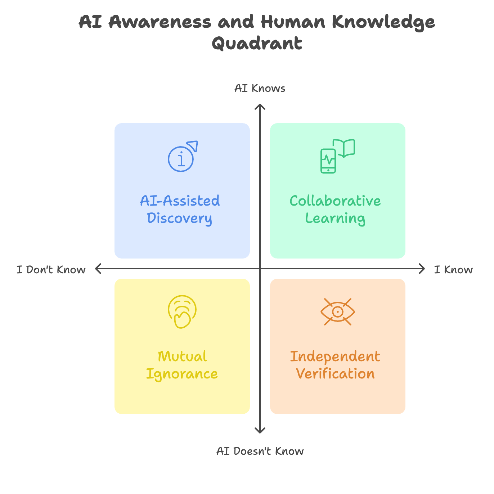
第一象限：公开区 (I Know, AI Knows)
- 别称： “效率区” 或 “抛光机”
- 特点： 你和AI对任务所需的核心知识都心知肚明。这里的目标不是探索，而是优化和提效。
- 沟通模式： 简洁明了，直奔主题。
- 提示词策略： 使用最简单的提示词，甚至无需完整的
RBTC框架。专注于动词和核心要求。 - 示例：
请帮我润色以下这段文案，让它更具说服力：[粘贴文案]
第二象限：盲点区 (I Know, AI Doesn't Know)
- 别称： “导师区” 或 “数据投喂区”
- 特点： 核心知识、背景、数据、甚至是期望的答案格式，都只存在于你的脑中。你需要“教会”AI。
- 沟通模式： 你是主导者、信息提供者。
- 提示词策略： 这是少样本学习（Few-Shot Learning）和提供详尽背景（Background）的主战场。你需要提供清晰的范例、完整的上下文、甚至上传文档（RAG的应用场景），将你的知识“移植”给AI。
- 示例：
你是一位财务分析师。请根据我公司以下独有的财务报表数据和分析框架，生成一份季度总结报告。[粘贴数据和框架范例]
第三象限：隐藏区 (I Don't Know, AI Knows)
别称： “探索区” 或 “提问区”
特点： 答案存在于AI庞大的知识库中，但你可能对这个领域一无所知，甚至不知道该如何准确提问。
沟通模式： 你是学习者、探索者。
提示词策略： 这里的瓶颈不在AI，而在人类提问的能力。你需要：
- 从一个宽泛的问题开始。
- 根据AI的回答，不断追问、澄清、缩小范围。
- 结合思维链（CoT），要求AI“
一步步解释”，帮你梳理知识体系。
示例：
“什么是弦理论？” (第一轮)“很好。请用一个初中生能懂的比喻，解释它和相对论的核心区别。” (第二轮)“基于这个区别，请一步步推导，它为什么需要11个维度？” (第三轮)
第四象限：未知区 (I Don't Know, AI Doesn't Know)
- 别称： “无人区” 或 “共创区”
- 特点： 这是一个真正的知识边界，答案对你和当前AI的知识库来说都是全新的。例如，探索一个前沿的科学假说，或为一个尚未存在的市场构思商业模式。
- 沟通模式： 你和AI是平等的“研究伙伴”。
- 提示词策略： 这是最考验综合能力的区域。你需要：
- 利用AI强大的信息检索和整合能力，快速学习相关领域的碎片知识。
- 使用思维链进行开放式的推演和头脑风暴。
- 你作为人类，凭借直觉、经验和价值观，对AI生成的可能性进行判断、筛选和整合，并提出新的探索方向。
- 示例：
关于‘利用A技术解决B问题’这个全新的想法，目前是否存在任何相关的理论或实验？请搜索并总结。如果没有，请基于A的技术原理，推导出一个可能的实现路径，并列出其中的关键挑战。
2. 工程师的焦点：主攻第二与第三象限
通过这个框架，我们可以清晰地看到，一个提示词工程师的核心价值和需要重点磨练的技能，主要集中在第二象限和第三象限。
- 第二象限（我知，AI不知）：极其考验你结构化表达和知识传递的能力。你是否能将你脑中的复杂知识，通过清晰的背景、高质量的范例和无歧义的指令，准确无误地“教会”AI？
- 第三象限（我不知，AI知）：极其考验你提出好问题和逻辑化探索的能力。你是否能像一个优秀的记者或侦探，通过层层追问和引导，从AI这个庞大的“信息源”中，挖掘出深藏的、精准的宝藏？
掌握好这两个象限的沟通艺术，你就能解决绝大多数高质量、高价值的人机协作问题。
3. 未来的图景：两条移动的轴线
这个框架不仅是一个静态的分析工具，更是一个动态的、预示未来的罗盘。构成这个框架的两条轴线，正在发生着剧烈的变化。
X轴（AI是否知道）的持续下移
这是一个确定的、不可逆的趋势。随着模型参数的增长和训练数据的海量增加，“AI不知道”的领域正在迅速缩小。今天需要我们费力提供背景知识（第二象限）的任务，明天可能就变成了AI的常识（第一象限）。
- 启示： 这意味着，单纯的“知识搬运工”式提示词技能，其价值会随时间递减。我们需要更关注那些与“推理”、“创造”、“价值观判断”相关的、更高级的协作模式。
Y轴（我是否知道）的向左移动
这是我们作为人类，在AI时代面临的主动选择。当AI的知识边界（X轴）不断扩张时，我们是选择停在原地，让我们“知道”的区域相对萎缩？还是利用AI这个强大的“杠杆”，以前所未有的速度学习和探索，将我们自己的知识边界（Y轴）奋力向左推进，去探索更广阔的“未知区”？
- 启示： 快速进步的人，往往是那些最擅长利用第三象限（向AI提问学习）和第四象限（与AI共同探索未知）的人。
本章小结
本章，我们学习了一个强大的人机协作战略框架。它帮助我们：
- 诊断当前对话所处的知识象限。
- 匹配最高效的提示词策略。
- 聚焦于第二、第三象限核心能力的锻炼。
- 思考在AI时代，我们作为人类的定位和发展方向。
理解这个框架，你就不再是一个盲目的提问者，而是一个清醒的、有策略的“对话驾驶员”，能自如地在四种模式中切换，游刃有余地驾驭与AI的每一次协作。
本章实践
请回顾一下你最近与AI进行的、印象最深刻的三次交互。
- 简要描述这三次交互的任务分别是什么？
- 尝试将这三次交互，分别归入我们今天学习的四个象限中的哪一个？
- 现在回看，你当时使用的提示词策略是否符合该象限的最佳实践？有没有可以改进的地方？（例如：“我当时在第三象限探索，但我问的问题太宽泛了，如果我当时能追问得更具体一些，效果可能会更好。”）
这个反思练习，将帮助你把这个战略框架，内化为你自己的思维习惯。
第十五章：超越技巧——优秀提示工程师的五大核心素养
欢迎来到第十五章，这可能是我们这本白皮书中最“务虚”但又最“务实”的一章。
至此，你已经学习了构建提示词的框架、一系列强大的高级技巧、以及选择模型的战略。你已经掌握了成为一名合格的提示词工程师所需的全部“硬技能”。那么，从“合格”走向“优秀”甚至“卓越”，那最后一步的关键是什么？
答案，不在于学习更多冷僻的技巧，而在于内化一套核心的思维模式和工作习惯。
本章，我们将从众多提示工程专家的经验中提炼出五大核心素养，这些素养将大师与学徒区分开来。这些不是需要记忆的技巧，而是需要培养的思维方式。它们是真正能提升你实践水平的"内功心法"。
1. 素养一：像“数据侦探”一样，审视每一个输出
初学者往往只关心AI的答案“对不对”，而高手则会把每一次输出都当作一条解开AI“内心世界”的线索。
为什么重要？
AI的“理解”和你以为的“理解”可能存在偏差。一个看似正确的答案，其背后的“思考路径”可能是错误的，这在更复杂的任务中会埋下隐患。一个有瑕疵的答案，更是暴露你提示词设计盲区的最佳“镜子”。
如何实践？
- 带着问题去阅读： 不要只看结果。要问自己：“AI为什么会这样回答？”、“它是不是误解了我的某个词？”、“这个输出的风格和语气，暴露了它把自己定位成了什么角色？”
- 把意外当线索： 当AI的回答出乎意料时，不要简单地判定为“AI又胡说八道了”。这是一个宝贵的机会，你应该追问：“我的哪部分指令可能导致了这种意外的联想？”
- 检查逻辑链： 在使用了思维链等技巧后，要逐一检查它的推理步骤。一个错误的结论，往往源于其中一步微小的逻辑谬误。
💡 核心心态： 永远不要假设AI完全理解了你。把每一次输出都当作一份需要仔细勘验的“证物”，从中“揣摩”AI的行为模式，这是你优化迭代的起点。
</aside>2. 素养二：秉持“无假设”原则，剥离你的“常识”
在提示词工程中，最大的陷阱之一，就是我们下意识地假设“AI应该知道这个”。
为什么重要？
AI没有你在特定领域、特定公司、甚至特定项目中所积累的“常识”和“隐性知识”。你认为理所当然的背景信息，对它来说就是一片空白。这种信息的缺失，是导致AI回答“看似正确，但脱离实际”的根本原因。
如何实践？
- 进行“外行测试”： 在写完一个复杂的提示词后，在脑海中想象一下：如果让一个刚入职的、完全不同专业的实习生来读这段指令，他能毫无疑问地理解任务的全部要求吗？如果不能，就说明你的提示词包含了太多未言明的假设。
- 信息清单化： 在开始写提示词之前，先用几分钟列出完成这个任务所必需的全部信息：目标、背景、关键定义、约束条件、目标受众……确保这些信息都明确地体现在了你的提示词中。
- 明确定义，而非暗示： 不要说“用我们公司的标准风格”，而要说“用一种专业、严谨、客观的风格”。不要说“总结一下会议要点”，而要说“总结一下会议关于‘预算审批流程’的决定和后续行动项”。
💡 核心心态： 把AI当成一个极其聪明，但对你的世界一无所知的“外星人”。你的任务，是为它提供一幅完整、清晰、无歧义的“地图”，让它能在你的世界里精准地执行任务。
</aside>3. 素养三：从“独白”到“对话”，与AI共同优化
初学者把AI当作一个“自动售货机”，投进一个提示词（硬币），期待掉出一个完美的答案（商品）。而高手则把AI看作一个可以“对话”和“共同创作”的伙伴。
为什么重要？
单向的指令是僵化的。通过引入“对话”机制，你可以利用AI自身的智能，来帮助你发现并优化提示词本身的问题。
如何实践？
赋予AI“提问权”： 在你的提示词中，加入一句“防御性”指令：“
在开始执行任务前，请先检查我的要求。如果存在任何模糊不清或逻辑矛盾的地方，请向我提问以澄清。” 这能提前暴露很多问题。让AI成为你的“提示词教练”： 当AI的输出不理想时，不要只是简单地重写。尝试进行一次“元交互”（meta-interaction）：
“这个结果并不符合我的预期。请你分析一下我刚才的提示词，你认为是我哪部分的描述不够清晰，才导致你产生了这样的误解？请给我3条具体的修改建议。”
💡 核心心态： 从一个单向的“指令下达者”，转变为一个双向的“对话发起者”。利用AI的智能，来打磨你自己的指令，形成一个强大的迭代优化闭环。
</aside>4. 素养四：用“实验精神”，建立有限的信任
面对AI强大的能力，我们很容易陷入“盲目信任”的陷阱。优秀的工程师，永远对结果保持一份专业的审慎，用严谨的“实验精神”来建立信任。
为什么重要？
AI的稳定性受多种因素影响，它在99%的情况下表现优异，不代表在1%的极端情况下不会犯下致命错误。在将AI应用于严肃、关键的业务流程前，必须对其可靠性进行验证。
如何实践？
- 小范围、多场景测试： 在正式应用一个提示词模板前，先用一小组有代表性的、不同情况的数据去测试它。不要只用“理想情况”的数据，更要用一些“边缘情况”或“异常情况”的数据去压力测试。
- 控制变量，单点优化： 当一个复杂的提示词效果不佳时，不要一次性修改三四个地方。像做科学实验一样，每次只调整一个变量（例如，只改动角色定义，或只增加一个范例），然后观察结果的变化。这能帮助你精准定位问题所在。
- 记录与复盘： 建立你自己的提示词“案例库”，记录下哪些尝试是成功的，哪些是失败的，以及你从中总结的规律。
💡 核心心态： 不要盲信，也不要偏见。像科学家一样，通过假设、实验、验证、复盘的流程，来客观地评估和提升你的提示词在真实世界中的表现。
</aside>5. 素养五：拥抱“迭代”，放弃对“完美”的执念
很多初学者都幻想存在一个“黄金提示词”或“完美模板”，能够一劳永逸地解决所有问题。然而，现实是残酷的。
为什么重要？
提示工程是一个充满未知的探索性领域。AI模型在不断进化，你的业务需求也在不断变化。追求一次性的“完美”，会让你陷入无尽的挫败感。
如何实践？
- 接受“足够好”： 提示词优化的目标，不是找到那个100分的“神级”答案，而是稳定地达到90分的“卓越”水准。
- 从“最小可用”开始： 不要一开始就试图构建一个包罗万象的复杂提示词。先从一个最简单的版本开始，让它能跑起来。然后，在实际使用中，根据遇到的问题，像“打补丁”一样，逐步为它增加新的指令、范例和约束。
- 把失败当成数据： 每一次不理想的输出，都是一份关于“这条路走不通”的宝贵数据。优秀的作品，都是由无数“失败”的砖石铺就而成的。
💡 核心心态： 放弃寻找“圣杯”的幻想。把自己当成一位“艺术家”或“工匠”，接受不完美，享受在持续的打磨、修正和迭代中，让你的作品无限趋近于卓越的过程。
</aside>本章小结
在本章，我们从具体的“术”层面，上升到了抽象的“道”层面，探讨了五大超越具体技巧的核心素养。它们是：
- 侦探般的审视：将每个输出都视为洞察AI“心智”的线索。
- 无假设的设计：剥离自身“常识”，为AI提供完整无歧义的信息。
- 对话式的交互：从单向命令转变为双向沟通，利用AI优化提示本身。
- 实验家的精神：通过严谨的测试与验证来建立对AI有限而可靠的信任。
- 艺术家的迭代：放弃对“完美”的执念，在持续的打磨中拥抱卓越。
这五种素养，共同构成了优秀提示词工程师的“内功心法”。它们提醒我们，与AI的协作不仅是一门科学，更是一门艺术。将这些思维模式融入你的日常实践，将帮助你更深刻地理解AI的行为，更游刃有余地驾驭这个强大的工具，真正从一名“指令者”蜕变为一名“共舞者”。
实践练习
请从你自己的工作或学习中，找出一个你最常用、也最重要的提示词。现在，请你以本章学习的五大核心素养为“诊断清单”，对它进行一次全面的“体检”。
- 侦探般的审视： 回顾它最近一次的输出，有没有哪些细节是你当时忽略了的？
- 无假设的设计： 这个提示词中，是否包含了哪些只有你懂而AI可能不懂的“行业黑话”或“背景假设”？
- 对话式的交互： 你能否在这个提示词中加入一句，引导AI在你指令不清时向你提问？
- 实验家的精神： 你能否想出一个“边缘案例”来测试这个提示词的稳定性？
- 艺术家的迭代： 如果让你对这个提示词做一个微小的、但能提升效果的改动，你会改哪里？
请把你的诊断过程和思考记录下来。这个练习，将是你从“学会”到“精通”的真正开始。
第十六章：“庖丁解牛”之外——当提示工程遇到“硬骨头”
欢迎来到第十六章。此刻，你的工具箱里已经装满了各式各样的利器，从基础的RBTC框架到高级的思维链，你已经像古代那位技艺高超的庖丁，能够游刃有余地“解剖”大多数AI任务。
但现实中，我们总会遇到一些“硬骨头”——无论你如何调整角度、变换工具，它都纹丝不动，甚至让你的工具“卷了刃”。这时，一个更深层次的问题摆在我们面前：是我的技术还不够好，还是这块骨头本身就无法被当前的工具啃动？
本章，我们将直面这个“撞墙”的时刻。我们将学习如何诊断一个“失败”的提示词，探讨最后的“攻坚”策略，并最终建立一种工程智慧：何时选择坚持，何时应该果断放弃。
1. 故障诊断：这个提示词是“可救”还是“无望”？
当你精心设计的提示词没有产生预期效果时，不要立刻陷入无尽的修改循环。先像一位冷静的医生一样，进行两步诊断：
第一步：诊断“理解力”——它听懂人话了吗？
问题的根源，往往是AI对你任务的根本性误解。
- 诊断方法： 使用思维链，让AI“复述”一遍你的任务。你可以问：“
在开始之前，请用你自己的话总结一下我的核心任务和目标是什么？”或者“请列出你解决这个问题的步骤。” - 判断标准：
- 可救： 如果AI的复述或步骤规划，与你的预期存在明显偏差，恭喜你，问题出在你的表达上。这意味着通过澄清指令、补充背景，这个提示词有很大的改进空间。
- 无望（的迹象）： 如果AI能准确复述你的任务，但实际执行时却南辕北辙，这可能是一个更深层次的能力问题。
第二步：诊断“进步性”——我们在靠近目标吗？
在确认AI“理解”了任务之后，小范围的优化是检验其能力的试金石。
- 诊断方法： 对你的提示词做一个微小但明确的改进（例如，增加一个范例，或将一条模糊的要求具体化）。
- 判断标准：
- 可救： 如果输出结果“渐进式地”变好了（哪怕只是一点点），说明你的优化方向是正确的，值得继续投入时间。
- 无望： 如果输出结果只是“随机地”变了样，或者在同一个地方反复犯错，毫无改善的迹象，这强烈暗示你可能已经触碰到了该模型当前能力的“天花板”。
2. 最后的“攻坚”策略
在决定放弃之前，这里还有两种高级的“攻坚”策略，值得你放手一搏。
策略一：“添砖加瓦”法（逐步构建信息）
当面对一个信息密度极高、极其复杂的任务时（例如，让AI分析一张布满数据的复杂图表，或理解一个动态的、多元素交互的场景），不要指望AI“一眼看穿”。
做法： 将复杂任务降维和拆解。与其直接问“
分析这张图表并得出结论”，不如分两步：- 第一步（信息提取）：
“这是一张图表。请你不要做任何分析，只是像一个数据记录员一样，客观地、分区域地（例如，先描述X轴，再描述Y轴，再描述图例）描述你看到了什么。”- 第二步（信息整合）：
“很好。现在，请基于你刚才自己描述的这些信息，进行分析并得出结论。”原理： 这种方法，相当于你先引导AI为自己搭建了一个信息的“脚手架”。基于这个它自己构建的、结构化的理解，再进行上层推理，成功率会大大提升。
策略二：“启发式”框架法（切换思考路径）
当AI在常规的、字面的逻辑路径上“卡壳”时，我们可以尝试给它一个全新的、充满想象力的“比喻”或“角色框架”，启发它从一个完全不同的角度来思考问题。
做法： 放弃生硬的指令，用一个“故事”来包装你的任务。
- 常规指令（可能失败）：
“请分析这段代码中的错误。”- 启发式框架：
“你是一位顶级的代码考古学家，下面这段代码是一份尘封多年的‘代码文物’。请你仔细勘察它，用考古学家的口吻，一步步分析出它在哪个‘年代’（编程范式）写成的，并指出其中可能存在的、不符合现代安全标准的‘脆弱结构’（Bug）。”原理： 这种方法，通过一个生动的比喻，为AI提供了一个全新的、它可能更熟悉的思考模型（例如，模型可能读过大量关于考古的故事），从而绕开了它在纯技术路径上的思维障碍。
3. 案例研究：文本世界里的“视觉”难题（附 2026 回看）
多模态（如图像识别）曾是提示工程最容易遇到“硬骨头”的领域之一。你的许多经验，比如让AI理解游戏画面中的NPC，就是一个绝佳的案例。
这个案例普遍揭示了当年（2024–2025 初）AI模型的核心局限：
- 静态训练的“烙印”： AI的“视觉”能力，主要来自于对海量静态图片的学习。它擅长识别一张图片里“有什么”，但极度缺乏对连续、动态场景的理解。它不知道上一帧的那个NPC和这一帧的是同一个人，也无法理解“玩家正在移动”这种连续性的概念。
- 文本与视觉的“鸿沟”： AI本质上仍是一个“文本处理”的大脑。它的视觉模块将图像转化为一种内部的、类似文本的描述，这个转换过程本身就会丢失大量细节和空间关系。因此，即便你在图像上标注，它也可能“视而不见”。
这个案例的启示是： 当你发现一个任务严重依赖于模型尚未成熟的核心能力（如动态视觉、空间推理、连续性记忆）时，无论你的提示词写得多么天花乱坠，都可能只是“在沙滩上建城堡”。
</aside>2026-08 回看：这块“硬骨头”已被模型进步啃掉了大半。 原生多模态模型如今能理解长视频与连续画面，computer-use 类 Agent 已能实时“看”屏幕并操作界面，图上标注、空间指认也大幅改善。当年“这是能力天花板，提示词救不了”的判断在当时是对的——这恰好印证了本章的方法论：正确识别能力边界、战略性放弃、等模型进步后再回来收割。能力边界是会移动的，你的“放弃清单”值得定期重访。
4. 放弃的艺术：何时坚持，何时“绕路”
在进行了诊断和最后的攻坚之后，你就来到了最终的决策路口。
- 何时应该“坚持”？
- 当你的诊断显示，问题主要出在“理解力”层面。
- 当你的每次微调，都能带来“进步性”的改善。
- 当你确信，任务所需的核心能力，在该模型的能力范围内。
- 何时应该“放弃”？
- 当诊断显示，AI能理解任务，但反复在同一处犯错，毫无“进步性”。
- 当你意识到，任务的核心要求，恰好撞上了模型能力的“天花板”（如上述的视觉案例）。
- 当你投入的时间和精力成本，已经远远超出了这个问题解决后可能带来的价值。
💡 核心心态： “放弃”不是失败，而是一种基于数据和判断的“战略性决策”。优秀的工程师，不仅要懂得如何解决问题，更要懂得如何高效地分配自己最宝贵的资源——时间和精力。与其在一个无解的问题上“死磕”，不如将经验归档，转向下一个可以被解决的、更有价值的挑战。
</aside>本章小结
在本章，我们探讨了提示工程实践中不可避免的“至暗时刻”——当我们遇到“硬骨头”时该怎么办。我们学习了：
- 一套诊断流程： 通过检验“理解力”和“进步性”，判断提示词是否值得继续优化。
- 两种攻坚策略： “添砖加瓦法”和“启发式框架法”，作为最后的尝试。
- 一个核心认知： 必须承认并识别模型存在的核心能力局限，尤其是在多模态等前沿领域。
- 一种工程智慧： 学会何时坚持，更要学会何时进行战略性的“放弃”。
真正的专家，不是那个能解决所有问题的人，而是那个能清晰地界定“问题边界”，并在此边界内将效率和成果最大化的人。
本章实践
请回顾一次你使用AI时，感觉最“挫败”或最“力不从心”的经历。那可能是一个你反复修改提示词，但结果依然不理想的任务。
现在，请你以本章学习的框架，对那次经历进行一次“复盘”：
- 故障诊断： 回想一下，当时的情况更像是AI“没听懂”（理解力问题），还是“听懂了但做不到”（能力问题）？你观察到了“渐进式改善”还是“随机性犯错”？
- 攻坚复盘： 你当时是否可以尝试使用“添砖加瓦法”或“启发式框架法”？如果可以，你会如何设计那样的提示词？
- 战略决策： 以你现在的认知来看，那次“撞墙”的经历，是一个应该坚持下去的挑战，还是一个应该果断放弃、等待模型进步的“硬骨头”？请说明你的理由。
第十七章：从“仆人”到“伙伴”——五种重塑人机关系的提示词技巧
欢迎来到第十七章！至此，你已经掌握了提示词工程的全套核心技能，从基础的RBTC框架到高级的思维链与模型选择。在绝大多数时候，你和AI的关系是明确的：你是“主人”，AI是“仆人”。你下达指令，它负责执行。
这是一种有效但有上限的模式。要解锁AI最深层次的潜力，我们需要一次思维上的飞跃：尝试将AI从一个被动的“工具”或“仆人”，提升为一个可以主动协作的“伙伴”。
本章，我们将学习五种足以颠覆你工作流的高级沟通技巧。它们不再是简单的“指令”，而是一种“关系”的设定，旨在激发AI进行更深层次的思考、扮演更复杂的角色、甚至反过来向你提供洞见。掌握它们，你将真正开始与AI“共舞”。
1. 技巧一：AI 扮演“提示工程师”（元提示法）
这是最直接的“元交互”技巧：让AI帮你写出更好的提示词。
核心理念： 利用AI对逻辑、结构和语言的深刻理解，来优化我们下达给它自己的指令。
为何有效： AI比我们更清楚什么样的指令结构对它来说是“清晰的”、“无歧义的”。让它自己“既当运动员又当教练”，可以快速生成规范、专业的提示词。
提示词示例：
# 背景 我一名市场经理，需要为一个新款的“智能降噪耳机”撰写一篇社交媒体推广文案，目标受众是20-30岁的科技爱好者。 # **任务** 请你扮演一位世界顶级的提示词工程师。根据我的目标，为我生成一个结构完整、高度优化的RBTC提示词，以便我未来可以直接使用这个提示词来高效地生成推广文案。
2. 技巧二：AI 扮演“魔鬼代言人”（红队思辨法）
我们常常会陷入对自己想法的“盲目乐观”中。这个技巧，就是主动为自己创造一个最严苛的“反对者”。
核心理念： 指示AI放弃附和与肯定，转而扮演一个批判者、怀疑论者，专门从对立面寻找你方案中的所有漏洞和风险。
为何有效： 它可以有效地帮助我们进行“压力测试”，克服个人的“确认偏误”。在一个绝对安全的环境里，让最强大的“对手”来攻击你的想法，是使其完善的最佳途径。
提示词示例：
# 背景 我计划在明年辞去工作，用我的积蓄开一家小众的精品咖啡馆。 # **任务** 请你扮演一位经验丰富、眼光毒辣且极度悲观的商业顾问。请毫不留情地批判我的这个计划，列出**至少5个**可能导致我彻底失败的致命风险，并详细阐述每个风险的理由。
3. 技巧三：AI 扮演“专家小组”（多视角辩论法）
复杂的决策，往往源于不同立场之间的权衡。这个技巧可以让你在几分钟内，获得一个议题的“360度全景视角”。
核心理念： 让AI不再以单一的、中立的身份回答，而是同时模拟多个持有不同（甚至对立）观点的“专家角色”，并让他们就同一个问题展开一场辩论。
为何有效： 它能迅速将一个复杂问题的内在矛盾、各方利益和决策的权衡点，生动、清晰地呈现在你面前，极大提升你决策的深度和全面性。
提示词示例：
# 议题 我们公司正在考虑是否应该采纳“每周工作四天”的制度。 # 任务 请你模拟一场由三方参与的圆桌会议。这三方分别是： 1. CEO：核心关注公司的生产效率和盈利能力。 2. 人力资源总监（HRD）：核心关注员工的满意度、身心健康和人才吸引力。 3. 一线业务团队主管：核心关注项目的交付进度和团队协作的实际困难。 请开始这场辩论，让每一方都陈述自己的核心观点和理由。
4. 技巧四：AI 扮演“苏格拉底式导师”（诘问引导法）
有时候，我们需要的不是答案，而是通往答案的思考路径。这个技巧旨在锻炼你自己的大脑。
核心理念： 严格禁止AI直接提供任何结论或答案。它唯一的任务，是通过不断向你提出启发性的问题，来引导你独立思考，并最终自己找到答案。
为何有效： 这是最高级的学习方式之一。它将AI从一个“知识的给予者”，转变为一个“思维的助产士”，能深刻地锻炼你的批判性思维和逻辑推理能力。
提示词示例：
# 角色 请你扮演苏格拉底 # 背景 我想深刻理解“什么是第一性原理思维”。 # 任务 不要直接向我解释任何定义。你只能通过向我提问的方式，一步步引导我。你可以从一个简单的问题开始，例如：“你通常是如何解决一个复杂问题的？”
5. 技巧五：AI 扮演“框架构建者”（先造工具再干活）
在面对复杂的分析或评估任务时，直接上手可能会遗漏关键点。这个技巧让AI先为任务“设计一套工具”。
核心理念： 在让AI执行一个复杂任务之前，先命令它为这个任务本身，量身定做一个分析框架、评估标准或工作流程。然后，再命令它使用自己刚刚创建的这个“工具”来完成任务。
为何有效： 它将AI隐性的、黑箱式的思考过程，转化为一个显性的、结构化的分析框架。这不仅让最终结果的质量更高、逻辑更严谨，也让你能清晰地看到它的评估依据，结果更加可靠和透明。
提示词示例：
# 背景 我需要你评估下面这份“无人机送货”商业计划书的优劣。 # 任务 1. 第一步（创建框架）： 请首先创建一个用于评估早期创业项目商业计划书的“5维度评估模型”。这5个维度应该包含市场潜力、团队能力、产品创新性、商业模式和财务预测，并简要说明每个维度的评估要点。 2. 第二步（应用框架）： 请严格使用你刚刚创建的这个模型，对下面的商业计划书进行逐项打分（每项1-10分），并给出详细的打分理由。
本章小结
在本章，我们学习了五种足以改变你与AI协作模式的高级技巧。它们的核心，都是将AI的角色从被动的“执行者”，提升为：
- 你的“提示词教练”（元提示法）
- 你最严苛的“批评家”（红队思辨法）
- 你的“多角度顾问团”（专家小组法）
- 你的“思维引路人”（苏格拉底法）
- 你的“方法论架构师”（框架构建法）
这些技巧的本质，是一种关系的转变。当你开始将AI视为一个可以共同思考、共同创造的“伙伴”时，你将解锁前所未有的智能与创造力。
本章实践
场景： 你正在面临一个真实的个人或工作决策：“我是否应该花未来三个月的时间，去学习一门新技能（例如：Python编程、视频剪辑或一门外语）？”
任务： 请从本章学习的五种高级技巧中，任选两种，分别设计一个提示词，来帮助你更深入、更全面地思考这个决策。
请写出你的两个提示词，并简要说明你为什么选择这两种技巧来辅助你解决这个特定问题。
第十八章：从“小白”到“AI时代的领航员”——总结与新的起点
亲爱的读者，恭喜你，已经走到了这本地图的终点。
我们一同开始于最初的好奇与懵懂，从如何提出一个最基本的问题，一步步走到了这里。我们曾一起搭建了结构化的RBTC框架，打开了装满利器的“工具箱”，学会了通过“示范”与“指令”的切换来因材施教。我们一同探索了AI的“短期记忆”边界，学会了像“预算师”一样管理Token。
随后，我们一同迈入了高级篇的殿堂，学会了引导AI“想清楚再回答”的思维链魔法，懂得了如何像一位总监一样为任务挑选最合适的“战马”。我们一起用四象限战略审视了人与AI的知识关系，并最终在上一章，探讨了那些超越具体技巧的工程师核心素养。
现在，是时候收起地图，将这段旅程的收获，内化为你未来探索之路上，永远闪耀的星辰。
1. 三阶跃迁：你的成长之路全景回顾
回顾整个白皮书，你的成长遵循着一个清晰的三阶段跃迁路径：
第一阶段：坚实的基础（“术”的掌握）
这是学习“如何清晰地表达”的阶段。你掌握了RBTC这一核心框架，学会了将脑中模糊的想法，转化为AI能听懂的、结构化的指令。这是从0到1的根本性转变。
第二阶段：进阶的技巧（“法”的运用）
这是学习“如何高效地沟通”的阶段。你理解了零样本与少样本的战略取舍，洞悉了Token与上下文窗口的技术边界。你不再仅仅是一个“提问者”，而是开始懂得如何根据AI的特性，运用不同的“法则”来提升沟通效率与质量。
第三阶段：高级的智慧（“道”的领悟）
这是学习“如何智慧地协作”的阶段。你学会了思维链，开始引导AI的“思考过程”；你掌握了模型选型，懂得了“权衡与取舍”；你洞悉了人机关系的四象限，并最终修炼了优秀工程师的五大“内功心法”。你不再将AI视为一个工具，而是开始探索如何与之成为真正的“伙伴”。
2. 核心心法：你应带走的四个终身原则
如果说，这本白皮书的所有知识需要被浓缩成几条可以伴你一生的核心原则，那它们应该是以下四条：
清晰胜于含糊
这是提示工程的第一性原理。无论是构建框架，还是设定要求，你所有努力的核心，都是在消除指令中的“歧义”，将你的真实意图，无损地传达给AI。一个清晰的提示，胜过一万个模糊的奇思妙想。
引导胜于命令
从“少样本学习”到“思维链”，再到“元交互技巧”，所有高级技巧的本质，都是从一个单向的“命令者”，转变为一个双向的“引导者”。学会提问、学会示范、学会激发，你将能解锁AI更高维度的能力。
迭代胜于完美
放弃寻找那条一劳永逸的“黄金提示词”。卓越的提示，不是被“发现”的，而是在一次次的尝试、失败、反思和微调中，被“打磨”出来的。拥抱这个迭代的过程，本身就是一种最快的进步方式。
协作胜于索取
这是从“高手”到“大师”的最终思维转变。不要将AI仅仅看作一个可以“榨取”答案的数据库或工具人。将它视为一个拥有不同知识结构和思考模式的“协作伙伴”。思考“我们”如何共同创造价值，而不是“我”如何从“它”那里获得价值，你将开启一片全新的大陆。
3. 新的起点：成为AI时代的领航员
这本白皮书即将合上，但这绝非你学习的终点，恰恰是你真正的起点。
AI的技术浪潮正以前所未有的速度奔涌向前。新的模型、新的技术、新的方法论层出不穷。今天我们所学的具体技巧，在未来可能会被更高效的方式所取代。
但是，你在本书中学到的核心原则——结构化思考的能力、清晰表达的能力、逻辑化探索的能力、以及与智能体高效协作的智慧——将永远不会过时。
它们是你在这场波澜壮阔的技术变革中，最坚实的“船”与最精准的“罗盘”。
现在，你已经不再是那个站在岸边，对AI感到好奇或迷茫的“小白”。你已经掌握了航海的图纸，拥有了驾驭风浪的工具。
前路漫漫，星辰大海。去实践、去探索、去创造，去享受这个时代赋予你的、与智慧共舞的无限可能。
你的旅程，未完待续。
去成为AI时代的领航员吧！
附章
附章1：工程师的工具箱——格式与符号的妙用
欢迎来到我们的“工具箱”章节！在此之前，我们已经学习了 RBTC 这个强大的思维框架，它如同我们构建提示词的“蓝图”。然而，再好的蓝图，也需要用清晰、精准的线条和符号来绘制，工程师（也就是我们）和施工方（也就是AI）才能准确无误地理解。
本章，我们将一起打开提示词工程师的专属“工具箱”，学习四样必不可少的“绘图工具”：Markdown、分隔符、XML标签和占位符。
掌握它们，你就能将“大白话”式的模糊请求，转化为 AI 能精准识别、无歧义执行的“机器语言”。这不仅能让你的指令结构一目了然，更能解锁许多高级玩法，让你的提示词工程能力再上一个新台阶。
1. Markdown 语法：搭建清晰的结构骨架
Markdown 是一种轻量级的标记语言，能让你用非常简单的符号，赋予文本清晰的结构。
1.1 为什么要用 Markdown？
- 提升结构清晰度： 通过标题、列表等形式，让 AI 能像看一本书的目录一样，迅速把握你的指令主次和结构。
- 便于模块化指令： 你可以将不同的任务模块（如“背景资料”、“任务要求”、“输出示例”）用标题清晰分开，避免混为一谈。
- 引导结构化输出： 当你在提示词中使用了 Markdown，AI 也更倾向于用同样的格式来组织它的回答，省去了你后期排版的麻烦。
1.2 怎么用？
Markdown 的核心就是“符号代表格式”。
| 格式 | Markdown 写法 | 示例 |
|---|---|---|
| 一级标题 | # 标题内容 |
# 营销文案生成任务 |
| 二级标题 | ## 标题内容 |
## 第一步：生成标题 |
| 无序列表 | - 内容 |
- 要点一<br>- 要点二 |
| 有序列表 | 1. 内容 |
1. 步骤 1 |
| 代码块 | 内容 |
[此处粘贴待总结的文章] |
| 分隔符 | —-- |
`以下为需要参考的文章： |
| ---` | ||
文章内容 |
示例提示词：
# 报告生成任务
## 背景
我是市场部经理，需要为本周的例会准备一份关于竞品A的分析报告。
## 任务
请帮我分析以下资料，并生成报告。
### 待分析资料
`[这里粘贴关于竞品A的长篇资料...]`
## 要求
- 报告分为“核心优势”和“潜在风险”两部分。
- 每部分用3个要点来总结。
1.3 什么时候用？
当你需要在一个提示词中下达多个步骤、包含多个信息模块，或者希望 AI 的输出也带有清晰结构时，就是 Markdown 发挥作用的最佳时机。
2. 分隔符：划定“重点加工区”
分隔符就像是你在文本中画出的“三八线”或“高亮框”，作用是隔离内容，避免混淆。
2.1 为什么要用分隔符？
你让 AI 总结一段含有“总结”这个词的文章，如果你不加分隔，AI 可能会感到困惑。分隔符能清晰地告诉 AI 哪些是我的指令，哪些又是我提供出来的参考资料或者案例。
2.2 常见的分隔符
- 三个反引号 `````： 最常用、最推荐的分隔符，尤其适合包裹大段的文本、代码或任何需要被完整隔离的内容。
- 三个短横线
---： 同样可以起到分割作用，视觉上更像一条分割线。 - 成对的括号
[]{}<>： 多用于标记短语、变量或需要特别注意的词。
示例提示词：
请你总结以下被三个反引号包裹起来的新闻文章，总结内容不要超过200字。
[这里粘贴上千字的新闻原文...]`
2.3 什么时候用？
- 当你的提示词中既有指令，又有需要被处理的原始文本时（例如：总结、翻译、改写）。
- 当你想让 AI 严格区分不同部分的信息，避免“串味”时。
3. XML 标签：给内容贴上“分类名牌”
如果说分隔符是画了一个“框”，那么 XML 标签就是给这个“框”起了个名字。这是一种更高级、更精准的隔离和指示方法。
3.1 为什么要用 XML 标签？
XML 标签允许你为不同的信息块“贴标签”，让 AI 不仅知道“这是要处理的内容”，更知道“这是什么类型的内容”。这使得你可以下达更复杂的、基于内容分类的指令。
3.2 怎么用？
格式非常统一：<标签名>内容</标签名>。标签名可以自定义。
示例提示词（高级用法）：
你是一位写作教练。请阅读下面的文章和我的批注，然后对文章进行修改。
<article_to_review>
[这里粘贴一篇学生写的文章...]
</article_to_review>
<my_comments>
我觉得这篇文章的开头部分不够吸引人，而且第三段的逻辑有点跳跃。
</my_comments>
任务：
请根据 <my_comments> 里的意见，重写 <article_to_review> 中对应的部分。
在这个例子中，AI 能精准地知道哪个是“待审阅的文章”，哪个是“我的意见”，并基于后者去修改前者。
3.3 什么时候用？
- 当你的提示词包含多个不同类型的信息块，且需要 AI 对它们进行不同处理时。
- 当你希望 AI 的输出也保持高度结构化时（你可以要求它用指定的XML标签来包裹输出内容）。
- 在需要进行复杂的多轮对话或任务处理时，XML 标签能帮助 AI 更好地追踪上下文。
4. 占位符：创造“填空式”万能模板
占位符是提升效率的终极武器，它能将一个精心设计的提示词，变成一个可以反复使用的“万能模板”。
4.1 为什么要用占位符？
- 提高效率： 对于日报、周报、邮件回复等重复性任务，只需替换占位符内容即可，无需重写整个提示词。
- 方便协作： 你可以创建一个带有占位符的“最佳实践”模板，团队成员只需“填空”，就能保证输出质量的下限。
- 降低错误率： 标准化的模板能有效减少因手写指令而产生的拼写或格式错误。
4.2 怎么用？
通常用成对的括号来表示“这里需要填充内容”。
- 常用占位符：
[变量名]、{变量名}、{{变量名}}
示例提示词（日报模板）：
# 个人工作日报生成器
## 基本信息
- 姓名：[你的姓名]
- 日期：[今天的日期]
- 部门：[你的部门]
## 工作内容
### 今日完成的核心工作
[请在此处详细描述今天完成的核心工作，分点列出...]`
###遇到的问题与挑战
`[请在此处描述今天遇到的主要问题...]`
## 任务
请根据以上信息，为我生成一份结构清晰、语言专业的个人工作日报。
4.3 什么时候用？
- 当你需要高频率地执行同一类型的任务时。
- 当你希望将一个优秀的提示词制作成标准化模板，供自己或团队使用时。
- 当需要进行自动化或批量化内容生成时。
本章小结
今天我们打开了提示词工程师的工具箱，掌握了四样强大的格式化工具，让我们的指令更加清晰和专业。
- Markdown：搭建提示词的“结构骨札”。
- 分隔符：划定内容的“处理边界”。
- XML 标签：为信息贴上“精准分类”的名牌。
- 占位符：创造高效复用的“万能模板”。
请记住，这些工具并非孤立存在，高手往往会将它们组合使用，构建出既强大又灵活的提示词。熟练运用这些“语法”，你将能更自如地驾驭 AI，让它成为你手中无往不利的利器。
本章实践
场景： 你是一家电商公司的运营经理，需要定期让 AI 帮忙分析一款产品的用户评论，并生成运营策略建议。你希望将这个任务制作成一个高效的、可重复使用的提示词模板。
任务： 请设计一个“用户评论分析及策略生成”的提示词模板。
要求： 在这个模板中，你必须综合运用本章学习的全部四种工具：
- 使用 Markdown 来组织整个提示词的结构（例如，使用标题和列表）。
- 使用 占位符 来标记需要被替换的内容（例如，产品名称、分析日期）。
- 使用 XML 标签 来清晰地标记不同类型的用户评论（例如，
<positive_reviews>和<negative_reviews>）。 - 使用 分隔符（如 ```） 来包裹大段的用户评论原文。